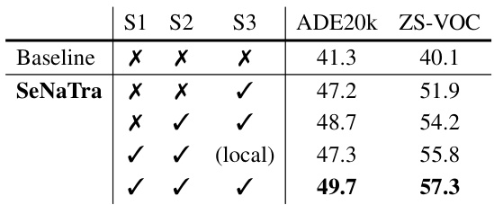
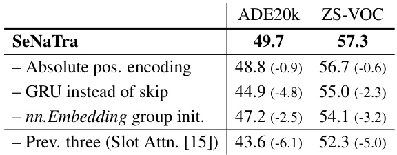
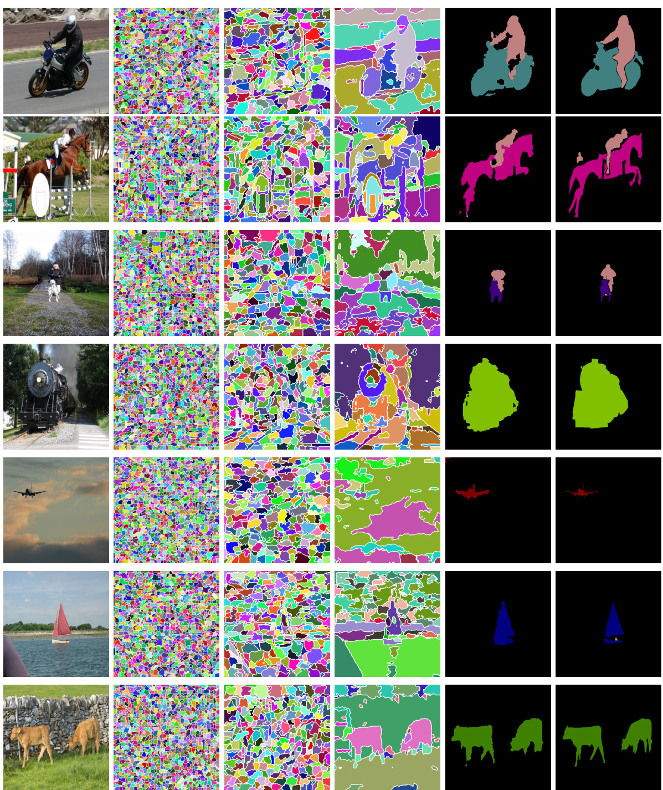
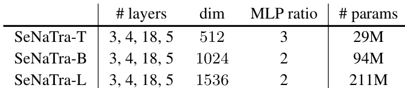
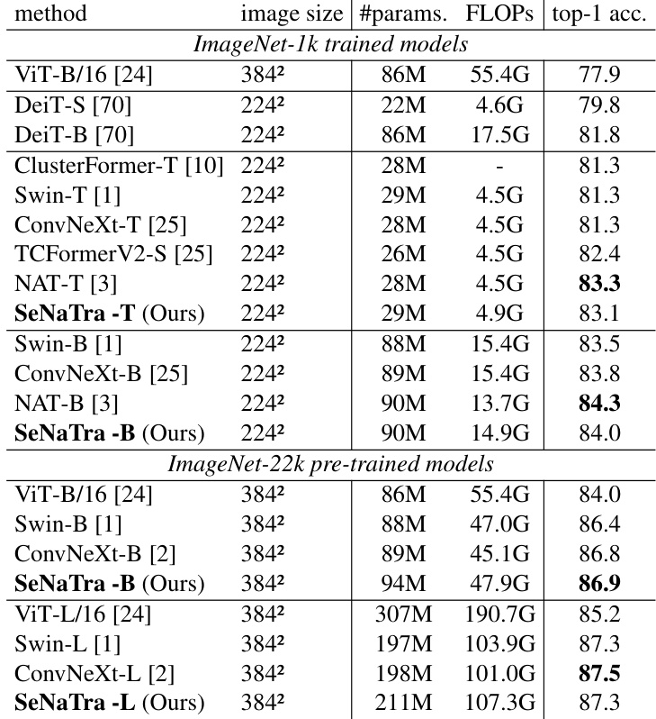
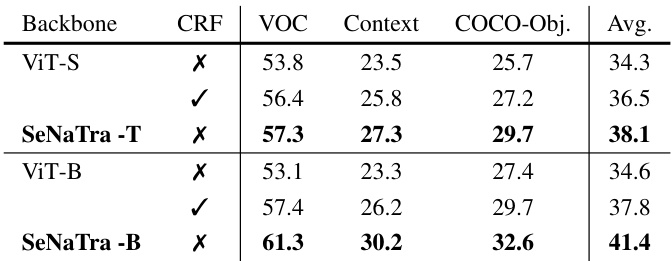
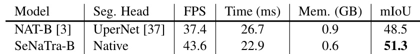
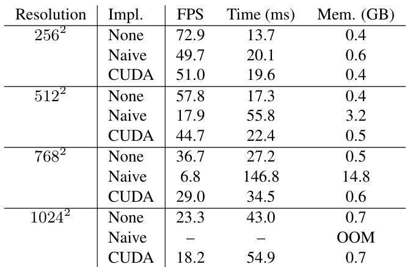

Native Segmentation Vision Transformers
None
research.nvidia.com/labs/dvl/projects/native-segmentation
このセクションでは、論文の中心的なアイデアである「Native Segmentation Vision Transformer (SeNaTra)」が、どのようにして画像の特徴を階層的にグループ化し、セグメンテーション情報を「生まれながらに」抽出していくのか、そのコンセプトを視覚的なイメージと共に提示しています。まさに、論文の顔となるイントロダクション部分です！🖼️✨
主な目的は、入力された画像パッチがネットワークの各ステージを通過するたびに、どのように解像度が変化し、意味のあるまとまり（グループ）が形成されていくか、そのダイナミックな過程を示すことです。このセクションのテキストは、その様子を表す図のキャプションの役割を果たしていると考えられます。
このセクションの核心： SeNaTraは、従来の画一的なダウンサンプリング手法（例えば、均等にピクセルを間引くプーリング層など）とは一線を画し、画像の内容に応じてトークンを賢くグループ化します。この階層的なグループ化こそが、追加の複雑なデコーダー（セグメンテーションマスクを生成するための専用モジュール）なしにセグメンテーションを実現する鍵となります。
キャプション詳細解説
このセクションで提示されているテキストは、SeNaTraの処理フローと各ステージでの特徴マップの状態を示唆するものです。具体的には、以下のような情報が含まれています。
処理ステージと解像度
SeNaTraのアーキテクチャは、複数のステージ（Stage 2, Stage 3, Stage 4）で構成されています。各ステージを経るごとに、特徴マップの解像度が段階的に低下していく様子が示されています。
- ✏️ Input patches: ネットワークへの入力となる画像パッチ群。これが処理の出発点です。
- ➡️ Stage 2 output: 第2ステージの出力。解像度が 56x56 になっています。入力と比較して、ある程度空間情報が圧縮されつつ、特徴が集約され始めている段階です。
- ➡️ Stage 3 output: 第3ステージの出力。解像度が 28x28 にさらに低下。より大域的な特徴が捉えられ、意味的なまとまりが形成されつつあります。
- ➡️ Stage 4 output: 第4ステージの出力。解像度が 14x14 (最初の例では7x7とありますが、論文の図2ではStage 4の出力は7x7となっているため、ここでは7x7と解釈します。2番目の例では14x14、7x7と複数の解像度が示されており、これは異なる設定やモデルバリアントを示唆している可能性があります) と最も低くなります。この段階では、画像全体のコンテキストを捉えた、より抽象的で意味のあるグループが形成されていることが期待されます。
階層的なグループ化のイメージ
テキストは2つの例を並べて提示しており、これはおそらく異なる入力画像や、処理の異なる側面を示していると考えられます。重要なのは、「group hierarchy」という言葉です。
グループ階層 (group hierarchy) とは、初期のステージでは小さな局所的な領域（スーパーピクセルのようなもの）がグループ化され、後のステージに進むにつれて、それらの小さなグループがさらに大きな、意味のある領域（例えば、物体の一部や背景領域など）へと統合されていく、階層的な構造を指します。ピラミッドのように、底辺では細かい情報が、頂点に近づくにつれて集約された情報が得られるイメージです。
論文の図1 (Figure 1) や図3 (Figure 3) を見ると、この階層的なグループ化の様子が視覚的に表現されており、初期ステージでは細かなスーパーピクセル様の構造が現れ、最終ステージではそれらが意味のある領域へとまとまっていく様子が確認できます。このセクションのテキストは、これらの図で示される概念を簡潔に要約していると言えます。
最初の画像情報
解像度: 56x56 (例1, 例2)
📝 初期グループ形成の開始
解像度: 28x28 (例1, 例2)
📝 中間的なグループ形成
解像度: 14x14 or 7x7 (例による)
📝 最終的な意味的グループ形成
... これらが 階層的なグループ (group hierarchy) を形成 ...
謎のコード「R3373131」について
テキストの最後に記載されている「R3373131」という文字列は、このセクションの文脈だけでは具体的な意味を特定することが困難です。
考えられる可能性としては：
- 📌 実験IDやバージョン管理コード： 特定の実験設定や、モデルのバージョンを示す内部的な識別子かもしれません。
- 📌 図の参照番号やプレースホルダー： 論文執筆過程で、後から図や詳細情報を挿入するためのメモ書きや、特定の図を参照するための内部コードである可能性があります。
- 📌 乱数シードや設定パラメータの一部： 実験の再現性のために使用された乱数シードや、特定のハイパーパラメータの組み合わせを短縮して表現したものかもしれません。
論文の他の部分や、公開されているコード・プロジェクトページに、この文字列に関する補足情報がないか確認する必要があります。現時点では、この文字列がSeNaTraのアーキテクチャや動作原理に直接関わる重要な情報であるとは断定できません。
このセクションは、SeNaTraの動作の「予告編」のようなものです。具体的なアルゴリズムや数式はここでは示されていませんが、「入力画像がどのように意味のある塊に分割されていくのか」という直感的なイメージを掴むことが重要です。特に「group hierarchy」という言葉が、この論文の核心的なコンセプトであるNative Segmentation（生まれながらのセグメンテーション）を理解する上で非常に重要になります。
後に続くセクションで、この階層的なグループ化を実現するための「Content-aware Spatial Grouping Layer」という具体的な手法が説明されますので、このセクションで示された大まかな流れを頭に入れておくと、理解が深まるでしょう。
Abstract
このAbstractの目的と論旨
このAbstractは、従来の画像認識モデル（Vision Backbone）における特徴量の空間解像度を低減させる手法（ダウンサンプリング）が、画像の内容に関わらず一律に行われている現状を指摘しています。これに対し、画像内の境界線や意味的な内容を理解し、それに基づいて動的に情報を集約（グルーピング）する新しいレイヤー構造を提案します。このグルーピングレイヤーを複数重ねることで、特別なセグメンテーション用モジュールを追加することなく、バックボーン自体が画像の領域分割（セグメンテーション）を「ネイティブに」行う能力を持つ「Native Segmentation Vision Transformer (SeNaTra)」という新しいアーキテクチャを提唱しています。そして、このSeNaTraが、セグメンテーションマスクの教師データなしでの高いゼロショット性能や、下流タスクにおける効率的なモデル設計に貢献することを示すのが主な論旨です。
現状の手法とその限界
多くのVision Backbone（画像認識モデルの根幹部分）では、入力画像の情報量を扱いやすくするために、空間的な解像度を下げる処理が行われます。この際、「一様なダウンサンプリング (uniform downsampling)」が長らく標準的な手法として採用されてきました。
用語解説：一様なダウンサンプリング (Uniform Downsampling)
画像内のすべての位置やピクセル値を区別なく一律に処理して、空間解像度を小さくする手法です。例えば、特定の領域内のピクセル値の平均を取る「プーリング」や、一定の間隔を空けてピクセルをサンプリングする「ストライド付き畳み込み」などがこれに該当します。画像の内容（例えば、重要な物体の境界があるか、細かいテクスチャがあるかなど）を考慮せず、機械的に解像度を落とします。
（概念図：画像がグリッドで分割され、各グリッドが内容に関わらず均等に縮小・代表される様子）
この「一様な」アプローチはシンプルですが、画像の重要な境界や細かいディテールを保持するのが苦手という課題があります。
提案：コンテンツ認識型の空間グルーピングレイヤー
この課題に対応するため、本研究では従来の一様なダウンサンプリングに代わる新しい設計アプローチとして、「コンテンツ認識型の空間グルーピングレイヤー (content-aware spatial grouping layer)」を提案します。このレイヤーは、画像の内容を"見て"、より賢くダウンサンプリングを行います。
このレイヤーは、まず画像内の物体の境界線 (image boundaries) や、それぞれの領域が「何」であるかといった意味的内容 (semantic content) を捉えます。
Vision Transformerで基本単位として扱われる画像パッチ（トークン）を、認識した情報に基づいて動的に関連性の高いグループへと割り当てます。これにより、削減されたトークンの集合を生成します。
（概念図：左が一様ダウンサンプリングで情報が均一に失われるのに対し、右の提案手法では猫の形状（境界や意味内容）に沿ってトークンが賢くグループ化され、情報が保持される様子）
用語解説：トークン (Token)
Vision Transformer (ViT) において、入力画像はまず小さな正方形のパッチに分割されます。これらの各パッチは、線形変換を経てベクトル表現に変換されます。このベクトル化された画像パッチのことをトークンと呼びます。Transformerモデルが画像情報を処理するための基本的な単位となります。
Native Segmentation Vision Transformer (SeNaTra) の誕生
提案する「コンテンツ認識型の空間グルーピングレイヤー」を、Vision Transformerの連続するステージ（層）に積み重ねていくと、興味深い現象が起こります。それは、特徴抽出プロセス自体の中で、階層的なセグメンテーション (hierarchical segmentation) が「ネイティブに (natively)」、つまり自然発生的に生じるのです。この特性を持つ新しいアーキテクチャを、本研究では「Native Segmentation Vision Transformer (SeNaTra)」と名付けました。
階層的セグメンテーション
初期のステージでは大まかな領域、後のステージに進むにつれてより細かい、意味のある領域へと分割されていく様子。
ネイティブに発生
特別なセグメンテーション用モジュールを後付けするのではなく、バックボーンの設計自体からセグメンテーション能力が生まれる。
（概念図：SeNaTraの複数ステージを通して、入力画像（左）が大まかなグループ（中央左）、次に少し細かいグループ（中央右）、最終的に意味のある領域（右）へと階層的にセグメント化されていく様子）
セグメンテーションヘッド不要の強力なマスク生成
SeNaTraアーキテクチャを注意深く設計することで、驚くべきことに、グルーピングレイヤーのみから強力なセグメンテーションマスク（画像の各ピクセルがどの領域に属するかを示す情報）が生成されることが示されました。これは、従来一般的だったセグメンテーション専用の追加モジュール（セグメンテーションヘッド）を必要としないことを意味します。
用語解説：セグメンテーションヘッド (Segmentation Head)
Vision Backboneから抽出された特徴マップを受け取り、それを最終的なセグメンテーションマスク（ピクセルごとのクラス分類結果など）に変換するための専用のニューラルネットワークモジュールです。多くの場合、アップサンプリング層や追加の畳み込み層などで構成されます。
（図：SeNaTraのグルーピングレイヤーが直接、高品質なセグメンテーションマスクを生成するイメージ）
新しいパラダイムの基礎
この発見は、「ネイティブなバックボーンレベルのセグメンテーション (native, backbone-level segmentation)」という新しいパラダイムの基礎を築くものです。つまり、セグメンテーションタスクが、バックボーン自体に内在する能力として実現されるという考え方です。これにより、以下のような利点が期待されます。
- 強力なゼロショット性能: マスクに関する教師データ（正解ラベル）なしで学習した場合でも、高いセグメンテーション性能を発揮します（ゼロショットセグメンテーション）。
- 効率的なモデル設計: 下流のセグメンテーションタスクに対して、よりシンプルで効率的なスタンドアロンモデルの設計が可能になります。
用語解説：ゼロショットセグメンテーション (Zero-shot Segmentation)
モデルの学習時にはセグメンテーションマスクの正解データを一切使用せず、例えば画像全体のラベル情報（例：「この画像には猫が写っている」）のみで学習したモデルが、推論時に未知の画像に対してピクセルレベルのセグメンテーションを行う能力のことです。非常に困難なタスクとされています。
まとめると...
このAbstractは、従来の均一なダウンサンプリング手法の限界を克服するために、コンテンツ認識型の空間グルーピングレイヤーを提案し、これを基盤とした新しいVision Transformerアーキテクチャ「SeNaTra」を紹介しています。SeNaTraは、特別なセグメンテーションヘッドなしで、バックボーン自体が階層的なセグメンテーションを「ネイティブに」実行できる点が革新的です。これにより、マスク教師なしでの優れたゼロショットセグメンテーション性能や、効率的なモデル設計が実現可能になることを示唆しています。
1 Introduction
このセクションでは、論文の導入部として、既存のコンピュータビジョン技術、特に画像セグメンテーションにおける課題を概説し、本研究が提案する新しいアプローチ「Native Segmentation Vision Transformer (SeNaTra)」の基本的なアイデアとその重要性を説明します。このセクションを読むことで、なぜ新しい手法が必要とされているのか、そしてSeNaTraがどのような革新をもたらそうとしているのかが明確になるでしょう。🚀
現状の課題：階層的ビジョンバックボーンとダウンサンプリング
現在の最先端のコンピュータビジョンモデル、特に画像認識タスクで用いられるものは、階層的ビジョンバックボーン (hierarchical vision backbones) [1, 2, 3] と呼ばれる構造を持っています。これは、初期の畳み込みニューラルネットワーク (Convolutional Neural Networks, CNNs) [4] の設計思想を踏襲しており、画像を処理する際に複数のステージ（段階）を経て、徐々に空間的な解像度を下げながら特徴を抽出していきます。
階層的処理
入力画像を大きな解像度から小さな解像度へと段階的に処理。各ステージで特徴をより抽象的に。
特徴抽出
畳み込み層や自己注意機構 (Self-Attention) などで画像の特徴を学習。
この特徴抽出の方法自体は、畳み込みから自己注意機構へと進化するなど、活発に研究されてきましたが、空間解像度を下げるダウンサンプリングステージ (downsampling stage) の手法は、実はあまり変わっていません。
画像や特徴マップの空間的な解像度（縦横のピクセル数）を小さくする操作のことです。これにより、計算量を削減したり、より大域的な特徴を捉えたりすることができます。
- プーリング (pooling): 代表的な手法で、例えば2x2の領域の最大値や平均値を取ることで解像度を半分にします。
- ストライド付き畳み込み (strided convolutions) [1]: 畳み込み演算を数ピクセル飛ばし（ストライド）で行うことで、結果的に出力される特徴マップの解像度を下げます。
これらの伝統的なダウンサンプリング手法は、画像の内容に関わらず、すべての空間的位置を一様に扱います。つまり、画像のエッジ部分であろうと平坦な領域であろうと、同じルールで解像度を下げてしまうのです。
画像のどこでも同じルールで縮小！
このような階層的な特徴抽出は、最新の画像セグメンテーション（画像を意味のある領域に分割するタスク）手法の基礎となっています。セグメンテーションでは、セグメンテーションヘッド (segmentation heads) [5, 6] と呼ばれる専用のモジュールが、バックボーンによって抽出・圧縮された特徴をアップサンプリング（解像度を上げる）し、意味のある領域にグループ化します。
しかし、ダウンサンプリング時に特徴を一様に扱ってしまうと、アップサンプリング時に特徴量の不整合 (feature misalignment) が生じやすくなります。これは、物体の境界情報などが失われたり、ぼやけたりしてしまう問題です。その結果、デコーダヘッド (decoder heads) （セグメンテーションヘッドの一種）は、バックボーン設計の限界を補うという余計な負担を強いられることになります [7, 8]。
元画像 均一ダウンサンプリング アップサンプリング 特徴のズレ・ぼやけ
境界が曖昧に...デコーダ頑張れ！💦
この問題に対処するため、最近の研究 [9, 10, 11, 12] では、データ駆動型のボトムアップピクセルグルーピング (data-driven bottom-up pixel grouping)、つまり画像の意味内容に基づいてピクセルをグループ化する新しいセグメンテーションネットワーク設計や戦略が探求されています。
これらのアプローチは概念的には魅力的ですが、既存の最新アーキテクチャに比べて性能が劣ることがあります。その主な理由は以下の2点です：
課題1 計算コスト
入力解像度に対して2次の計算複雑性 (quadratic computational complexity) を持つアルゴリズム [9, 10] は、高解像度画像への適用が難しい。
例：入力サイズ N なら N2 の計算量
課題2 微分不可能性
微分不可能なグルーピング操作 (non-differentiable grouping operations) [11, 12] は、ネットワーク全体の学習（特にEnd-to-End学習）を難しくし、スケーラビリティや実用性を制限する。そのため、ピクセルグルーピング能力を活かせず、結局セグメンテーションヘッドに頼らざるを得ない。
Preprint. Under review.
提案：ネイティブセグメンテーション
そこで本研究では、Native Segmentation Vision Transformer (SeNaTra) という新しいバックボーンアーキテクチャを提案します。SeNaTraの中核となるのは、空間グルーピング層 (spatial grouping layer) です。
従来の均一なグリッドベースのダウンサンプリング（プーリングやストライド付き畳み込みなど）を置き換えるものです。この層は、画像の内容に基づいて、視覚トークン (visual tokens)（画像パッチや特徴ベクトルなど）を意味的にまとまりのあるグループへと動的に割り当てることを学習します。
「これは猫の一部だニャ😺」「これは背景だゾ🐘」
バックボーンの各ステージでこのグルーピング操作を連続して行うことにより、入力ピクセルから最終的なトークンへのマッピングが自然に構成されます。これにより、各バックボーンステージのトークンに対するマルチスケール階層セグメンテーションマスク (multi-scale hierarchy of segmentation masks) が効果的に生成されます。
この能力を、我々はネイティブセグメンテーション (native segmentation) と呼びます。なぜなら、セグメンテーション能力が、外部のセグメンテーションヘッド [13, 6, 5] ではなく、バックボーン自身の内在的な領域を認識する表現 (region-aware representation) から自然に生じるからです。これにより、外部ヘッドは必ずしも必要ではなくなりますが、経験的には依然として有益である場合もあります。
ネイティブセグメンテーションの核心
バックボーン自体が
セグメンテーションを理解！
特別なセグメンテーション
ヘッドへの依存を低減！
SeNaTraの設計と利点
SeNaTraの設計は、従来のバックボーンレベルでのグルーピング手法と比較して、主に2つの方法論的な利点があります。
利点1 微分可能な反復的クラスタリング ✨
標準的なクロスアテンション (vanilla cross-attention) [9, 10] や微分不可能なクラスタリング (non-differentiable clustering) [11, 12] を用いる手法とは異なり、SeNaTraは知覚的グルーピングアルゴリズム (perceptual grouping algorithms) [14, 15] に着想を得た、微分可能な反復的クラスタリング (differentiable, iterative clustering) を採用しています。
これにより、構造化された帰納的バイアス (inductive bias)（モデルが学習しやすくするための事前知識や制約）が組み込まれ、直接的な教師なしでも一貫性のあるグループが形成されるのを可能にします。
人間が物を見るときのように、自然にまとまりを見つける能力を模倣しています。
利点2 スケーラビリティの確保 🚀
高解像度入力に対応するため、初期のステージでは制限されたコンテキストウィンドウ (restricted context windows) を持つローカルグルーピング層 (local grouping layers) を使用します。これにより、入力解像度に対して線形スケーリング (linear scaling) を実現します（計算量が入力サイズに比例して増加）。
一方、最終ステージでは密なグルーピング (dense grouping)（画像全体を考慮するグルーピング）を採用し、効率的に画像全体のセグメンテーションマスク (whole-image segmentation masks) を生成します。
初期ステージ: 局所的に賢くグルーピング (計算効率◎)
最終ステージ: 全体を見て大きくグルーピング (大局的理解◎)
全体として、SeNaTraの設計は、スケーラブルなネイティブセグメンテーションを可能にしつつ、効率性を保ち、エンドツーエンドで微分可能 (end-to-end differentiable)（ネットワーク全体を一括で学習可能）なままです。
主要な発見
本研究を通じて、いくつかの重要な発見がありました。
スーパーピクセル様構造の創発
驚くべきことに、マスク教師あり学習 (mask supervision)（ピクセル単位での正解ラベルを与える学習）を一切行わなくても、ネットワーク設計の結果として、スーパーピクセル様の構造 (super-pixel-like structures) が現れることを観測しました（Figure 1, bottom）。これは、手作業で作られたり [19]、明示的に入力として使われたり [11] するのではなく、古典的なスーパーピクセルアルゴリズム (classical superpixel algorithms) [16, 17, 18, 14] に似た構造が自動的に形成されることを意味します。
（上図は論文中のFigure 3ですが、初期ステージ (Stage 2 Groups, Stage 3 Groups) でのグループ形成が、Figure 1 (bottom)で言及されているスーパーピクセル様構造の創発の様子を示しています。）
意味的な領域へのグループ化
これらのスーパーピクセル様構造は、最終的な密なグルーピング層において、さらに意味的にまとまりのある領域へとグループ化されます。
ゼロショットセグメンテーションでの高性能
SeNaTraのネイティブセグメンテーション能力を、複数の標準的なベンチマークを用いたゼロショットセグメンテーション (zero-shot segmentation)（学習時に見たことのない物体クラスをセグメンテーションするタスク）で検証しました。その結果、従来手法（より大規模なデータセットで学習したモデルを含む）を大幅に上回る性能を示しました。これは、提案アーキテクチャがグルーピング層のおかげでデータ効率が良いことを示唆しています。
教師ありセグメンテーションでの優位性
ADE20k [20] や COCO-panoptic [21] といったデータセットで、セマンティックセグメンテーション (semantic segmentation)（各ピクセルをクラスに分類）やパノプティックセグメンテーション (panoptic segmentation)（セマンティックとインスタンスセグメンテーションを統合）のために明示的なマスク教師あり学習を行った場合でも、SeNaTraは専用のセグメンテーションヘッド（例：RoIヘッド (RoI heads) [5] やTransformerデコーダ (Transformer decoders) [6]）なしで、多くの強力なベースラインを上回りました。しかも、パラメータ数やFLOP数 (FLOP count)（計算量）は大幅に削減されています。
既存手法との相乗効果
さらに、これらの専用ヘッドと組み合わせて使用した場合でも、SeNaTraはトップレベルのバックボーンの性能を一貫して向上させました。
本研究の貢献まとめ
本研究の主な貢献は以下の3点です。
- Native Segmentation Vision Transformer (SeNaTra) の提案: ピクセル/マスク教師なしで、視覚入力の階層的セグメンテーションを学習する新しいVision Transformerです。
- 空間グルーピング層: ネットワークの主要な構成要素であり、画像内容に適応した特徴ダウンサンプリングを実行します。これにより、従来のセグメンテーションネットワークで採用されていた均一なグリッドベースの特徴ダウン/アップサンプリング層を効果的に置き換えます。
- 合理化されたネイティブセグメンテーションネットワーク: 専用ヘッドなしでマスクを取得し、ピクセル/マスク教師なしで学習した場合のゼロショットセグメンテーション、および標準的なセマンティック/パノプティックセグメンテーションベンチマークで優れた性能を発揮します。
2 Related Work
このセクションでは、本研究「Native Segmentation Vision Transformers (SeNaTra)」がどのような背景のもとで提案され、既存の研究と比較してどのような新規性や貢献があるのかを明らかにするために、関連する研究分野を幅広くレビューします。具体的には、Vision TransformerやCNNといった基本的な画像認識のバックボーン構造、セグメンテーションなどの密な予測タスクの手法、画像の領域をまとめる知覚的グルーピングの考え方、そして近年注目されているバックボーン内部でのグルーピング処理という4つの主要なトピックについて、過去の研究動向と本研究との関連性を詳述します。これにより、SeNaTraが既存技術のどこに位置し、どのような課題を解決しようとしているのかが明確になります。
Vision backbones (ビジョンバックボーン)
コンピュータビジョンの分野は、データ駆動型の手法によって大きく進歩してきました。その中核を担うのが「ビジョンバックボーン」と呼ばれる、画像から特徴を抽出するための基本となるネットワーク構造です。
CNNの登場と発展
Neocognitron [22] (1980年) や LeNet [23] (1998年) といった先駆的な研究以来、畳み込みニューラルネットワーク (CNNs: Convolutional Neural Networks) がこの分野の発展を牽引してきました。
用語解説: CNN
CNN は、主に画像認識に使われるニューラルネットワークの一種です。人間の視覚野の仕組みにヒントを得ており、以下の要素から構成されます：
- 畳み込み層 (Convolutional Layers): 学習可能なフィルタ (learnable filters) を入力特徴マップに適用し、エッジやテクスチャなどの局所的な特徴を抽出します。
- プーリング層 (Pooling Layers): 特徴マップの空間的な次元を削減（ダウンサンプリング）し、計算量を減らすとともにある程度の位置ずれに対して頑健にします。
これらの層を複数積み重ねることで、階層的 (hierarchy) な特徴表現を獲得します。浅い層では単純な特徴を、深い層ではより複雑で抽象的な特徴を捉えることができます。
階層構造とダウンサンプリング
CNNは通常、畳み込み層の階層を用い、入力特徴マップに学習可能なフィルタを適用します。これらの処理は、特徴のダウンサンプリング操作 (feature downsampling operations) と交互に行われ、マルチスケール特徴マップ (hierarchy of multi-scale feature maps) の階層を生成します。
CNNの階層構造イメージ
入力画像 → [畳み込み層 + プーリング層] → [畳み込み層 + プーリング層] → ... → 高次特徴
Transformerベースのアーキテクチャ [24] (例: Vision Transformer) が登場したにも関わらず、現代的な階層型バックボーン [1, 3, 25] (例: Swin Transformer, NAT) は依然として密な予測 (dense prediction) [26] (例: セグメンテーション、深度推定) において主流であり、同じ基本設計原則に従っています。
その原則とは、複数の特徴抽出ステージ (feature extraction stages) で構成され、それらの間には均一なダウンサンプリング操作 (uniform downsampling operations) が行われるというものです。
本研究の焦点
本研究では、これまであまり注目されてこなかったダウンサンプリング操作に焦点を当てています。この操作を、提案する空間的グルーピングモジュール (spatial grouping module) に置き換えることで、ネイティブなセグメンテーション能力 (native segmentation capabilities) を持つバックボーンを実現できることを示します。
Dense prediction (密な予測)
「密な予測」とは、画像中の全てのピクセルに対して予測を行うタスクの総称です。セマンティックセグメンテーション（各ピクセルをクラスに分類）、インスタンスセグメンテーション（各オブジェクトを個別に識別・分割）、深度推定などが含まれます。
過去10年間で、密な予測のためのネットワーク設計は「カンブリア爆発」とも言えるほどの多様な発展を遂げました。注目すべき例としては以下のようなものがあります。
Fully Convolutional Networks (FCN) [27]
全結合層を畳み込み層に置き換えることで、任意のサイズの入力画像に対してピクセル単位の予測を可能にしました。
Encoder-Decoder Architectures [28]
U-Netなどが代表的。エンコーダで特徴を抽出し、デコーダでそれをアップサンプリングして高解像度の予測マップを生成します。
Pioneering work of [29, 30]
R-CNNシリーズなど、物体検出とセグメンテーションを組み合わせた初期の研究です。
より最近では、DETR (DEtection TRansformer) [31] が登場しました。これは、Transformerを用いて、集合予測 (set prediction) としてエンドツーエンドの物体検出に取り組みました。オブジェクトの提案領域やセグメントを学習可能なクエリ (learnable queries) として扱います。
MaskFormer [13, 6] はこのDETRの設計を活用し、さらにピクセルデコーダ (pixel decoder) を追加して特徴マップをアップサンプリングし、バックボーンとTransformerデコーダと共同で学習してクエリを処理します。
SeNaTraとの連携
本研究のSeNaTraは、MaskFormerのようなセグメンテーションヘッド (segmentation heads) と組み合わせて使用することで、セグメンテーション精度を向上させることができます。また、そのような専用ヘッドがない場合でも、SeNaTra自体が高品質なネイティブマスク (native masks) を生成できます。
Perceptual grouping (知覚的グルーピング)
「知覚的グルーピング」とは、人間が視覚情報を認識する際に、似たような要素や近接した要素をひとつのまとまりとして捉える心理学的な現象です。コンピュータビジョンでは、この概念を画像セグメンテーションに応用しようとする試みが古くから行われてきました。
古典的な手法
エンドツーエンドのセグメンテーション手法が登場する以前は、組み合わせ最適化 (combinatorial optimization) がこのタスクの主要なアルゴリズムツールでした。
- 📝 Graph-based segmentation [17]: グラフベースの効率的なセグメンテーション手法で、領域の内部的なばらつきに基づいて領域を適応的に統合します。
- 📊 Normalized cuts [32]: グラフカットを正規化することで、よりバランスの取れた領域分割を目指す手法です。
スーパーピクセル
スーパーピクセルアルゴリズム (superpixel algorithms) (例: SLIC [14]) は、色の類似性と近接性に基づいてセグメント（スーパーピクセル）を効率的に得るためのツールとして登場しました。
用語解説: スーパーピクセル
スーパーピクセルとは、画像を構成するピクセルを、色やテクスチャなどの特徴が似ている近隣ピクセル同士でグループ化したものです。個々のピクセルよりも意味的にまとまりのある単位として扱え、後の処理の計算量を削減する効果があります。

（参考画像：スーパーピクセルの一例）
セグメンテーション固有の曖昧さ（どこまでを一つの領域とみなすか）を認識し、いくつかの手法では、領域を段階的に統合して複数のスケールにわたるセグメントの階層 (hierarchies of segments) [18, 33] を探索しました。
本研究への影響
私たちのSeNaTraのアプローチは、これらの古典的な知覚的グルーピングの考え方に触発されていますが、それを現代のエンドツーエンドで学習可能なビジョンバックボーン (end-to-end trainable vision backbones) の文脈で再定式化しています。
学習ベースのピクセルグルーピング手法
いくつかの研究では、ピクセルグルーピングのための学習ベースのメカニズムが提案されています。
- 研究 [34]: SLICアルゴリズムの微分可能な変種 (differentiable variant of the SLIC algorithm) を導入し、タスク特化型のスーパーピクセルを実現しました。
- 研究 [15]: K-Meansの微分可能な変種 (differentiable variant of K-Means) を提案し、教師なしでの物体発見に利用しました。これは画像ピクセルを反復的に一連の「スロット」に割り当てます。
本研究の設計思想
これらのアプローチは私たちの空間的グルーピング層 (spatial grouping layer) に影響を与えましたが、私たちは代わりにスパースで効率的な設計 (sparse and efficient design) を提案し、それを現代のバックボーンの基本的な構成要素として統合します。
Grouping in vision backbones (ビジョンバックボーンにおけるグルーピング)
近年、ビジョンバックボーンの内部で、データ駆動的に入力要素（ピクセルやトークン）をグループ化する学習可能なダウンサンプリング操作を設計する研究が登場しています。これは、従来の固定的なダウンサンプリング（プーリングなど）とは異なるアプローチです。
先行研究：学習可能なダウンサンプリング
- GroupViT [9]
- ClusterFormer [10]
これらの研究は、学習可能なダウンサンプリング操作 (learnable downsampling operations) を備えたデータ駆動型バックボーンの設計を開拓しました。これらは、(密な) クロスアテンション層 ((dense) cross-attention layers) を使用して画像構成要素をより少数のトークンセットにグループ化します。
課題：計算量
アテンション操作は入力サイズに対して二乗の計算複雑性 (quadratic complexity) を持つため、これらの手法のスケーラビリティが妨げられていました。
本研究 (SeNaTra) のアプローチ
対照的に、私たちのSeNaTraのアプローチは汎用的で、大きな入力解像度にもスケーラブルです。これは、初期の局所的なレイヤー (early local layers) が、密なレイヤーが操作する入力トークンセットの濃度（カーディナリティ）を削減するためです。
SeNaTraの利点
- 様々なセグメンテーションタスクで使用可能。
- テキスト教師ありセマンティックセグメンテーションにおいて、クロスアテンションベースのグルーピング [10] を大幅に上回る性能。
代替的なアプローチと課題
他の研究 [11, 12] は、計算量の問題を軽減するために、微分不可能なスーパーピクセル手法 [19] (non-differentiable super-pixel method) を用いて初期の画像セグメンテーションを得てから、データ駆動型のグルーピングを行う手法を提案しています。
- TCFormer [12] は、複数のネットワーク層にわたって画像構成要素をグループ化するために、外部のクラスタリング手法 (external clustering method) に依存しています。
これらの手法の課題
微分不可能なクラスタリング手法への依存は、エンドツーエンドの学習を困難にし、モデルの適用範囲を制限する可能性があります。
SeNaTraの優位性
私たちのSeNaTraのアプローチは、そのような微分不可能なクラスタリング手法を必要とせず、完全に微分可能なグルーピング層 (differentiable grouping layers) のみで構成されています。
SeNaTraの成果
- 合理化された設計 (streamlined design) は、ゼロショットセグメンテーションにおいて先行研究と比較して良好な性能を示します。
- さらに、上記の研究とは異なり、下流のセグメンテーションタスクにおいて、専用のセグメンテーションヘッドの有無にかかわらず良好な性能を示すことを明らかにします。
セクション全体のまとめ
この「関連研究」セクションでは、SeNaTraが立脚する既存技術の概観と、それらに対するSeNaTraの貢献を明確にしました。
- Vision Backbones: CNNの階層構造と均一なダウンサンプリングという伝統的な設計に対し、SeNaTraは内容適応型の空間的グルーピングによるダウンサンプリングを提案します。
- Dense Prediction: FCNやEncoder-Decoder、DETR、MaskFormerといった密予測手法の発展を踏まえ、SeNaTraはこれらのヘッドと連携可能でありつつ、ヘッドなしでも高品質なネイティブマスクを生成できることを示します。
- Perceptual Grouping: 古典的なグラフベースの手法やスーパーピクセルの考え方に着想を得つつ、SeNaTraはこれらを現代的な微分可能なエンドツーエンド学習の枠組みで再構築します。
- Grouping in Vision Backbones: GroupViTやClusterFormerなどの先行研究がクロスアテンションの計算コストや微分不可能な処理に課題を抱えていたのに対し、SeNaTraは効率的でスケーラブルな微分可能グルーピング層を提案し、ゼロショット性能やヘッドの有無によらない汎用性で優位性を示します。
これらの比較を通じて、SeNaTraが画像セグメンテーションタスクにおいて、より効率的で、本質的なセグメンテーション能力を持つ新しいバックボーンアーキテクチャの方向性を示すことが期待されます。
3 Native Segmentation Vision Transformers
このセクションでは、論文の核心的な提案である Native Segmentation Vision Transformer (SeNaTra) について詳しく解説します。SeNaTraは、従来のVision Transformerとは異なり、画像の特徴を抽出する過程そのものにセグメンテーションの能力を組み込んだ新しいアーキテクチャです。
主な目的は、画像の内容（コンテンツ）を理解し、それに基づいてピクセルを意味のあるグループにまとめる「空間グルーピング層」を導入することで、セグメンテーションタスクに特化した追加のヘッド部分（デコーダなど）がなくても、バックボーンネットワーク自体が階層的なセグメンテーションマスクを生成できるようにすることです。これにより、より効率的で、かつセマンティックな情報を保持した特徴抽出が期待できます。
ポイント： SeNaTraのキーワードは「ネイティブ」。つまり、セグメンテーションがネットワークの基本的な機能として「生まれつき」備わっている、というイメージです。
SeNaTraの構造は、近年の階層型Vision Transformer [1, 2, 3] の標準的な設計を踏襲しており、主に4つのステージで構成されています。入力画像は \(H \times W\) のサイズだとすると、各ステージを経るごとに特徴マップの空間解像度は段階的に小さくなり、逆にチャネル次元（特徴の種類の数）は2倍になっていきます。これは、情報を集約しつつ、より複雑な特徴を捉えようとする一般的な深層学習モデルの戦略です。
- 初期ステージ： 入力画像を \(4 \times 4\) のパッチに分割し、これらを初期のトークン埋め込み（Transformerが処理できるベクトル表現）に変換します。
- 後続ステージ（\(S_i, i=2, \dots, 4\)）： 各ステージ \(i\) で生成されるトークンの解像度は \((H/2^{i+1}) \times (W/2^{i+1})\) となります。例えば、ステージ2では解像度が \(H/8 \times W/8\)、ステージ3では \(H/16 \times W/16\)、ステージ4では \(H/32 \times W/32\) となります。
このセクションの構成は以下の通りです：
- セクション3.1： ネットワークのステージ間で、従来の均一なダウンサンプリング層（例：プーリングやストライド畳み込み）を置き換える「コンテンツ認識型空間グルーピング層」について詳述します。このグルーピング層を積み重ねることで、ピクセルを徐々に大きく、意味のある領域へとまとめ上げる階層的な画像表現を構築します（図2(a)参照）。
- セクション3.2： このグルーピング層による学習されたダウンサンプリング操作が、特にセグメンテーションのような密な予測タスクにおいて重要となる、境界を保持した特徴アップサンプリングをどのように実現するかを説明します。
このアプローチは汎用的で特定のタスクに依存しませんが、特にセグメンテーションタスクにおいてその真価を発揮することが期待されます。
図2：SeNaTraモデル全体の設計図
この図はSeNaTraの主要な構成要素を視覚的に示しています。
- (a) アーキテクチャ概要： 画像が入力されると、まずパッチ埋め込みが行われ、ステージ1に入ります。その後、ステージ2, 3, 4と処理が進みます。各ステージ間には「コンテンツ認識グルーピング層」が配置され、ダウンサンプリングを行います。ステージが進むにつれて、特徴マップはより粗く（低解像度に）なりますが、より大域的で意味的な情報を捉えるようになります。最終ステージ（Stage 4）では密なグルーピング (Dense Grouping) が行われ、画像全体の情報を統合します。
- (b) 空間グルーピング層： この層の核心的な処理を示しています。入力トークン群（下側のグリッド）と、それらを代表するグループ（上側のグリッド、出力トークンに対応）間で、ソフトな割り当て（Softmax Assignment）が行われます。この割り当て情報と入力トークンの特徴を使って、グループの特徴が更新（Weighted Average & Group Features Update）されます。この処理が反復的に行われます。
- (c) 学習されたアップサンプリング： 複数のグルーピング層で学習された割り当て行列（\(A^{\mathrm{ups}}\)）を組み合わせることで、低解像度の特徴マップを高解像度にアップサンプリングする際の対応関係を定義できます。これにより、単なる拡大ではなく、意味的な関連性を考慮したアップサンプリングが可能になります。例えば、\(A_l^{\mathrm{ups}}\)はステージ\(l\)から\(l-1\)へのアップサンプリングを、\(A_{l-1}^{\mathrm{ups}}\)はステージ\(l-1\)から\(l-2\)へのアップサンプリングを表し、これらを乗算することで\(A_{l \to l-2}^{\mathrm{ups}}\)が得られます。
3.1 コンテンツ認識型空間グルーピング層 (Content-aware Spatial Grouping Layer)
この層は、SeNaTraの中核をなす革新的なコンポーネントです。従来のダウンサンプリング手法の限界を克服し、より賢い方法で空間情報を集約することを目指します。
学習目標：意味的にまとまりのあるピクセルグループの学習
従来のアーキテクチャで標準的に使われているプーリングやストライド畳み込みといった均一ダウンサンプリング操作は、画像内のすべての特徴位置を、その特徴内容に関わらず平等に扱い、すべての入力トークンに対して固定の操作を適用します。このアプローチは、周波数の高い領域（詳細部）と低い領域（平坦部）を区別したり、関連する詳細を捉えたりする能力に本質的な限界があります。
この限界に対処するため、本論文では、グリッド上の特徴位置だけに依存するのではなく、入力特徴に動的に適応する入力トークンとダウンサンプリングされたトークン間のマッピングを学習することを提案します。具体的には、類似した特徴埋め込みを持つトークン（つまり、同じオブジェクトや意味的にまとまりのある領域に属するトークン）を、ダウンサンプリングされた表現において同じ出力トークンにマッピングします。このようなマッピングを学習することで、モデルは連続するネットワークステージを通じて画像内の意味的に重要な境界を保持することができます。
グルーピングアルゴリズム
この直感に基づいて、このタスクを微分可能なクラスタリング処理として捉えます。これは、古典的な K-means法 [35, 36] や、その現代的な微分可能版 [15] に着想を得ています。ここでの出力ダウンサンプルトークンはクラスタのセントロイド（中心点）として機能し、入力トークンは反復的にこれらのセントロイドに割り当てられます。
正式には、\(X^{\mathrm{in}} \in \mathbb{R}^{N^{\mathrm{in}} \times d}\) を \(N^{\mathrm{in}}\) 個の \(d\) 次元入力トークンの集合とします。これらはピクセル埋め込みか、前のステージからのトークンに対応します。目標は、空間次元が削減された \(N^{\mathrm{out}}\) 個の \(2d\) 次元トークンの集合 \(X^{\mathrm{out}}\) を生成することです。標準的なアーキテクチャ設計に従い、すべてのレイヤーで \(N^{\mathrm{out}} = N^{\mathrm{in}} / 4\) と設定します（つまり、トークン数を1/4に減らします）。
具体例： もし入力トークンが \(64 \times 64 = 4096\) 個あった場合、出力トークンは \(4096 / 4 = 1024\) 個になります。これは空間解像度で言うと \(32 \times 32\) に相当します（元のトークンが正方格子状に配置されていた場合）。チャネル次元は \(d\) から \(2d\) に倍増します。
完全なアプローチの概要はAlgorithm 1に示されています。まず、一般的な手法 [25, 3] にならい、ストライド畳み込み (Strided Convolution) を用いて \(X^{\mathrm{out}}\) を初期化します。その後、実験では \(L=3\) と設定された \(L\) 回の反復処理を行います。
直感的には、\(A^{\mathrm{ups}} \in [0, 1]^{N^{\mathrm{in}} \times N^{\mathrm{out}}}\) は行方向に正規化されているため（つまり、各行の要素の合計が1）、各要素 \(A_{ij}^{\mathrm{ups}}\) は、各入力トークン \(X_i^{\mathrm{in}}\) が出力ダウンサンプルトークン \(X_j^{\mathrm{out}}\) にマッピングされる確率として解釈できます。これらの割り当て確率は、セントロイドとして機能する \(X^{\mathrm{out}}\) の対応する特徴を更新するために使用されます（Algorithm 1, L9）。このプロセスを \(L\) ステップ繰り返すことで、割り当て確率と結果として得られる特徴 \(X^{\mathrm{out}}\) の両方を反復的に洗練させます。
ローカルグルーピングと密なグルーピング
Algorithm 1の主要な制限は、\(A^{\mathrm{ups}}\) の計算コスト（L3）にあります。これは入力トークンセットの数 \(N^{\mathrm{in}}\) に対して二乗の計算量（\(O(L (N^{\mathrm{in}})^2 d)\)）を持つため、高解像度の特徴マップでは実用的ではありません。
この問題に対処するため、スーパーピクセル生成のための SLICアルゴリズム [14, 34] に着想を得て、高解像度の特徴マップに対しては、クロスアテンション係数の計算を \(X^{\mathrm{out}}\) の各出力トークンを中心とする小さな \(3 \times 3\) のローカルウィンドウに制限します（図2(b)参照）。
ローカルウィンドウのイメージ： 出力トークン（グループの中心）は、入力トークン空間において一定の領域を担当します。その担当領域の近傍の入力トークンだけを見て、割り当てを計算する、というイメージです。これにより、遠く離れたトークン同士の関連性を計算する必要がなくなり、計算量が大幅に削減されます。
直感的には、このメカニズムは学習されたダウンサンプリング演算子の柔軟性を保持しつつ（入力トークンは動的にダウンサンプリングされた対応物にマッピング可能）、局所性の事前知識 (locality prior) を注入します。つまり、入力トークンは、結果として得られる出力空間で近くになるトークンにマッピングされるようになります。これにより、出力トークンにおける局所性の概念が可能になり、一般的に使用されるローカルアテンションメカニズム [1, 3] を活用できます。
計算上、この事前知識は非常に疎な (sparse) \(A^{\mathrm{ups}}\) および \(A^{\mathrm{down}}\) 行列をもたらし、これらはCUDAカーネルで効率的に計算できます（付録E.1参照）。全体として、グルーピング層の計算量を \(\mathcal{O}(L (N^{\mathrm{in}})^2 d)\) から \(\mathcal{O}(L N^{\mathrm{in}} d)\) に削減し、高解像度マップでの実用性を確保します。 私たちのアーキテクチャでは、より高解像度の特徴マップが処理される第2および第3ステージでローカルグルーピングを使用します。最終ステージでは、密な（つまり、非スパースな）グルーピングを有効にし、モデルの出力トークンが画像全体の領域やオブジェクトを統合できるようにします。
Slot Attentionとの関連
グルーピング層における中心的な演算は、Slot Attention [15] で導入されたものと類似しています。私たちのダウンサンプルトークンはスロットとして解釈できますが、ランダムな分布からサンプリングされるのではなく、入力トークン \(X\) に対するストライド畳み込み層によって初期化されます。
その他の技術的な違いとしては、以下のような点があります：
- 元々スロット（ピクセルグループ）の更新に使用されていたGRU（Gated Recurrent Unit）を、より単純なスキップ接続（Algorithm 1, L9）に置き換え。
- 入力トークンと出力トークン間の空間的関係をエンコードするために相対位置エンコーディングを使用（Algorithm 1, L3）。
さらに重要なのは、前述のクロスアテンション演算におけるスパース性の制約が高解像度入力の効率的な処理を可能にし、この微分可能なグルーピングメカニズムを階層的なVision Transformerバックボーンで実用的なものにしている点です。
Algorithm 1: スパース性を考慮した、\(L\) 回の反復による入力特徴マップ \(X\) に対するグルーピング層
このアルゴリズムは、Content-aware Spatial Grouping Layerの中核となる処理フローを詳細に記述したものです。入力された特徴マップを、より少ない数のトークン（グループ）に集約し、同時にそれらのグループの特徴を更新していきます。
📝 アルゴリズムの構成要素：
- 入力 (Input):
- \(X^{\mathrm{in}} \in \mathbb{R}^{N^{\mathrm{in}} \times d}\): \(N^{\mathrm{in}}\)個の\(d\)次元入力特徴マップ（トークン群）
- \(M_{\mathrm{loc}} \in \{0, 1\}^{N^{\mathrm{in}} \times N^{\mathrm{out}}}\): ローカルグルーピングのためのマスク行列。値が1の位置の接続のみが考慮されます（実際には \(\{0, -\infty\}\) で実装され、ソフトマックス前に加算されます）。
- 学習可能なモジュール (Learnable Modules):
- \(\mathsf{Conv}\): ストライド畳み込み層（出力トークンの初期化用）
- \(Q, K, V\): 線形射影層（クエリ、キー、バリューの生成用）
- \(\mathrm{MLP}\): 多層パーセプトロン
- \(\mathrm{LN}\): レイヤー正規化 (Layer Normalization)
- \(B\): 相対位置バイアス
- \(\tau\): 温度パラメータ（ソフトマックスのスケーリング用）
🔄 処理ステップ：
-
1初期化：出力トークン \(X^{\mathrm{out}}\) を、入力 \(X\) にストライド畳み込み (\(\mathsf{Conv}\)) を適用し、レイヤー正規化 (\(\mathrm{LN}\)) を行うことで初期化します。
\( X^{\mathrm{out}} \gets \mathrm{LN}(\mathsf{Conv}(X^{\mathrm{in}})) \)
初期セントロイド設定 -
2反復処理ループ： \(l = 1, \ldots, L\) の \(L\) 回、以下のステップ3から9を実行します。論文では \(L=3\) です。 反復的洗練
-
3ソフト割り当て行列 \(A\) の計算：
入力トークン \(X^{\mathrm{in}}\) からキー \(k(X^{\mathrm{in}})\) を、出力トークン \(X^{\mathrm{out}}\) からクエリ \(q(X^{\mathrm{out}})\) を生成し、それらの積（アテンションスコア）を計算します。相対位置バイアス \(B\) を加算します。温度パラメータ \(\tau\) でスケーリングします（論文では \(\tau\) は乗算ではなく、アテンションスコアを \(\tau\) で割る形で使われることが多いですが、ここでは \(A\) の計算式内に \(\tau\) が含まれています。図では、\(A\) は \(\tau \cdot k(X^{in}) \times q(X^{out})^T + B\) となっています）。
\( A \gets \tau \cdot k(X^{\mathrm{in}}) \cdot q(X^{\mathrm{out}})^T + B \)
アテンションスコア -
4ローカルマスクの適用：計算されたアテンションスコア \(A\) にローカルマスク \(M_{\mathrm{loc}}\) を加算します。 \(M_{\mathrm{loc}}\) は、考慮しない接続に対応する要素を \(-\infty\) (非常に小さい値) にすることで、それらの接続がソフトマックス後にゼロになるようにします。
\( A \gets A + M_{\mathrm{loc}} \)
スパース化 -
5アップサンプリング用割り当て行列 \(A^{\mathrm{ups}}\) の計算： マスク適用後の \(A\) に行方向のソフトマックス関数を適用し、\(A^{\mathrm{ups}}\) を得ます。これにより、各入力トークンが各出力トークンに割り当てられる確率が得られます（各行の和が1）。
\( A^{\mathrm{ups}} \gets \mathrm{softmax}_{\mathrm{rows}}(A) \)
行正規化 (確率化) -
6ダウンサンプリング用割り当て行列 \(A^{\mathrm{down}}\) の計算： \(A^{\mathrm{ups}}\) を列方向に正規化し、\(A^{\mathrm{down}}\) を得ます。具体的には、\(A^{\mathrm{ups}}\) の各要素 \(A_{ij}^{\mathrm{ups}}\) を、その列の要素の合計で割ります。これにより、各出力トークンがどの入力トークンから情報を得るかの重みが得られます（各列の和が1）。
\( A_{ij}^{\mathrm{down}} \gets \frac{A_{ij}^{\mathrm{ups}}}{\sum_{k=1}^{N^{\mathrm{in}}} A_{kj}^{\mathrm{ups}}} \)
列正規化 (重み付け) -
7(ステップ 8はアルゴリズム図に明示されていませんが、ループの終了を示唆)
-
9出力トークン \(X^{\mathrm{out}}\) の更新：
まず、入力トークン \(X^{\mathrm{in}}\) からバリュー \(v(X^{\mathrm{in}})\) を生成し、\(A^{\mathrm{down}}\) の転置 \((A^{\mathrm{down}})^T\) を使って加重平均を計算し、レイヤー正規化を適用したものを \(X^{\mathrm{out}}\) に加算します（スキップ接続）。これは、各出力トークンが、割り当てられた入力トークンの特徴を重み付きで集約する操作です。
\( X^{\mathrm{out}} \gets X^{\mathrm{out}} + \mathrm{LN}((A^{\mathrm{down}})^T \cdot v(X^{\mathrm{in}})) \)
次に、更新された \(X^{\mathrm{out}}\) にMLPを適用し、さらにレイヤー正規化を行ったものを \(X^{\mathrm{out}}\) に加算します（スキップ接続）。これは、集約された特徴をさらに変換・洗練する操作です。
\( X^{\mathrm{out}} \gets X^{\mathrm{out}} + \mathrm{LN}(\mathrm{MLP}(X^{\mathrm{out}})) \)
セントロイド更新 -
10(ステップ 11はアルゴリズム図に明示されていませんが、ループの終了を示唆)
-
12出力 (Return): 最終的に更新された出力トークン \(X^{\mathrm{out}}\)、ダウンサンプリング用割り当て行列 \(A^{\mathrm{down}}\)、アップサンプリング用割り当て行列 \(A^{\mathrm{ups}}\) を返します。 最終結果
アルゴリズムの直感的解釈
このアルゴリズムは、K-meansクラスタリングの考え方に似ています。
- \(X^{\mathrm{out}}\) はクラスタのセントロイド（中心点）の役割を果たします。
- ステップ3-5では、各入力トークン \(X_i^{\mathrm{in}}\) がどのセントロイド \(X_j^{\mathrm{out}}\) に属するかというソフトな割り当て（確率 \(A_{ij}^{\mathrm{ups}}\)）を計算します。これはK-meansのEステップ（期待値ステップ）に相当します。
- ステップ9では、その割り当て確率に基づいてセントロイド \(X^{\mathrm{out}}\) の特徴を更新します。これはK-meansのMステップ（最大化ステップ）に相当します。
このEステップとMステップを \(L\) 回繰り返すことで、トークンのグループ分けとグループの特徴表現が徐々に洗練されていきます。スパース性（\(M_{\mathrm{loc}}\)）の導入は、特に初期のステージで計算量を抑えつつ、局所的なグルーピングを促進するための工夫です。
3.2 ネイティブセグメンテーション (Native Segmentation)
このセクションでは、3.1で説明した空間グルーピング層を複数積み重ねることで、どのようにして「ネイティブ」なセグメンテーション能力がバックボーンネットワーク自体に備わるのかを解説します。
マルコフ連鎖による割り当ての合成
画像をモデルに入力すると、すべての \(n\) 個のグルーピング層の複合的な出力として、2つの行列セットが得られます：\(\{A_i^{\mathrm{ups}}\}_{i=1}^n\) と \(\{A_i^{\mathrm{down}}\}_{i=1}^n\) です。ここで、各行列 \(A_i^{\mathrm{ups}}\)（または \(A_i^{\mathrm{down}}\)）は、ステージ \(i+1\) のグルーピング層の出力に対応し、次元は \(N_i^{\mathrm{in}} \times N_i^{\mathrm{out}}\) です。グルーピング層は連続するステージで適用されるため、各 \(i = 1, \ldots, n-1\) に対して \(N_i^{\mathrm{out}} = N_{i+1}^{\mathrm{in}}\) となります（つまり、ある層の出力トークン数が次の層の入力トークン数になります）。
思い出してほしいのは、構成上、\(A_i^{\mathrm{ups}}\) は行確率行列（各行の要素の和が1）であり、各エントリは各入力トークンが後続のダウンサンプルトークンにマッピングされる確率として解釈できるということです。したがって、各行列 \(A_i^{\mathrm{ups}}\) は状態遷移行列として解釈でき、ステージ \(l\) のトークンからより初期のステージ \(l-k \in \{1, \ldots, n-1\}\) のトークンへの全体的なマッピングは、以下の状態遷移確率を持つマルコフ連鎖として解釈できます：
\( A_{l \to l-k}^{\mathrm{ups}} := A_{l-k+1}^{\mathrm{ups}} \times \cdots \times A_{l}^{\mathrm{ups}} \)
マルコフ連鎖のイメージ： ステージが進むごとに行われるトークンのグループ化を、状態の遷移と見なします。例えば、ステージ3のトークンがどのステージ2のトークンに由来し、そのステージ2のトークンがどのステージ1のトークンに由来するのか、という遷移確率を次々に掛け合わせることで、ステージ3のトークンとステージ1のトークン（元のピクセルに近いレベル）の対応関係（確率）を計算できます。
同様に、\(A^{\mathrm{down}}\) は列確率行列（各列の要素の和が1）なので、\(A_{l \to l+k}^{\mathrm{down}}\) はステージ \(l\) からステージ \(l+k\) へのトークンのマッピングを定義します：
\( A_{l \to l+k}^{\mathrm{down}} := (A_{l+k-1}^{\mathrm{down}})^T \times \cdots \times (A_{l}^{\mathrm{down}})^T \)
（注：ダウンサンプリングの際は転置行列 \((A^{\mathrm{down}})^T\) を使用します。これにより、行確率行列となり、アップサンプリングと同様の形式で解釈できます。）
したがって、ステージ \(l\) における任意の \(N_l^{\mathrm{out}}\) 個の \(d\) 次元トークン埋め込み \(X\) は、内積 \(A_{l \to l-k}^{\mathrm{ups}} X\) を介してステージ \(l-k\) の解像度にアップサンプリングされたり、同様に \(A_{l \to l+k}^{\mathrm{down}} X\) を介してステージ \(l+k\) の解像度にダウンサンプリングされたりすることができます。
最後のグルーピング層を除くすべての層はローカルグルーピングを利用するため、割り当て行列の積の中で非スパース（密）な行列は最大でも1つだけです。関連するすべてのスパース行列の積もまたブロック疎であり、効率的に計算できます（付録E.1参照）。
バックボーンレベルでの階層的セグメンテーションの解釈
前の段落での観察は、画像をセグメントに階層的に分解することを可能にします。各ステージ \(i\) において、 \(A_{1 \to i}^{\mathrm{ups}}\) は、入力ピクセル（ステージ1のトークン）をステージ \(i\) のトークン（グループ）にマッピングするソフトなセグメンテーションマスクを提供します。これらのマスクは、ステージ \(i\) が進むにつれて、より粗く（低解像度に）、しかしより大域的な意味を持つようになります。最終ステージ4では密なグルーピングが有効になるため、トークンは画像全体にまたがるセグメンテーションマスクをエンコードできます。
特筆すべきは、これらが中間的な遷移行列やその合成に対する明示的な教師なしで達成できるという点です。グルーピング層は微分可能であるため、アーキテクチャ全体は、最終ステージトークンのグローバルプーリングを介して、標準的な画像レベルの目的関数（例：画像分類）でエンドツーエンドで訓練可能です。
推論時には、学習された分類ヘッドやテキスト埋め込みを最終トークンに適用し、その後 \(A_{1 \to n}^{\mathrm{ups}}\) （ここで \(n\) は最終ステージ）を介してアップサンプリングすることで、セマンティックセグメンテーションに適したゼロショット入力レベル予測が可能になります。マスク教師なしにもかかわらず、グルーピング層の強力な帰納的バイアスにより、この設定で高品質なマスクが得られます（セクション4.1で示されます）。
マスク教師あり学習の活用
画像セグメンテーションタスクは、画像を \(S\) 個の互いに素なセグメントに分割し、セグメントごとに分類を行うこと、と大別できます。現代の手法はインスタンスレベルの高解像度予測を可能にするために専用のヘッド [6, 37] に依存していますが、私たちのモデルは入力-出力トークンマッピング \(A_{1 \to n}^{\mathrm{ups}}\) を通じてバックボーンレベルで直接画像分割をエンコードします。
これにより、以下のようなミニマリスティックで純粋にネイティブなアプローチが可能になります：
- 単純なMLPのみを訓練して、最終トークンを二部マッチング損失 [31]（DETRなどで使われる損失関数）で分類する。
さらに、私たちのモデルは標準的なセグメンテーションフレームワークに統合することも可能で、そこでは重要な改善点があります：ピクセルデコーダで一般的に使用される特徴マップのアップサンプリングおよびダウンサンプリング操作を、私たちのグルーピングベースの操作に置き換えることができます。これにより、最先端手法のセグメンテーション精度を上回る改善が見られます（セクション4.2）。
ポイント： SeNaTraは、(1) 単独でセグメンテーションを行う（ネイティブアプローチ）、(2) 既存のセグメンテーションモデルのバックボーンやアップ/ダウンサンプリング部品として機能する（統合アプローチ）、という2つの使い方ができます。
4 Experiments
このセクションでは、提案手法であるSeNaTra (Native Segmentation Vision Transformer) の性能を、様々な条件下で徹底的に評価します。具体的には、マスクを使わない教師あり学習（画像分類ラベルや画像キャプションのみを使用）と、マスク情報も使った教師あり学習の両方で、どれだけ効果的にセグメンテーション（領域分割）ができるかを検証します。さらに、SeNaTraの設計上の工夫が実際に性能向上にどれだけ貢献しているのかも分析します。
主な評価ポイント
- ✏️ マスクなし教師あり学習 (セクション4.1):
- 画像分類タスク (ImageNet) でのセグメンテーション能力の出現 (4.1.1)
- 画像とキャプションを用いたゼロショットセグメンテーション (4.1.2)
- ✏️ マスクあり教師あり学習 (セクション4.2):
- セマンティックセグメンテーション (4.2.1)
- パノプティックセグメンテーション (4.2.2)
- ✏️ 設計要素の分析 (アブレーションスタディ) (セクション4.3)
評価モデル
SeNaTraの3つのバリエーションで評価を行います。これらのモデルは、出力される特徴量（埋め込み）の次元数が異なります。これは先行研究[3]に倣った設定です。
SeNaTra-T (Tiny)
出力埋め込み次元: 512
SeNaTra-B (Base)
出力埋め込み次元: 1024
SeNaTra-L (Large)
出力埋め込み次元: 1536
詳細な設定は論文のAppendix Dに記載されています。
4.1 Learning Without Mask Supervision (マスク教師なし学習)
このサブセクションでは、ピクセル単位のマスク情報を一切使わずにSeNaTraを学習させた場合の性能を評価します。画像全体のラベル（例：この画像は「猫」）や、画像に対応する説明文（例：「公園で遊ぶ犬」）だけを教師データとして用います。
4.1.1 ImageNet Classification (ImageNet画像分類)
SeNaTraを大規模画像データセットであるImageNet-1kおよびImageNet-22k [38] を用いて画像分類タスクで学習させます。学習方法はSwin Transformer [1]の設定を踏襲しています。
下の図3は、学習されたグループ表現がバックボーンの各ステージでどのように変化するかを示しています。また、5列目には予測されたクラスに対する各グループの最終的な活性化（どのグループが予測クラスに強く反応したか）を可視化しています。
Figure 3: ImageNet事前学習から出現するセグメンテーション
この図は、SeNaTraがImageNetでの画像分類タスクの学習を通じて、どのようにセグメンテーション能力を獲得するかを示しています。
1列目 (Input Image): 元の入力画像です。
2列目 (Stage 2 Groups): バックボーンのステージ2出力。初期のグルーピング結果で、スーパーピクセル（似た色の隣接ピクセルを集めた小さな領域）のような構造が見られます。
3列目 (Stage 3 Groups): ステージ3出力。より大きなまとまりにグループ化されています。
4列目 (Final Stage 4 Groups): 最終ステージ4出力（密なグルーピング層）。意味的にまとまりのある領域（例：鳥の体、背景の枝）へと統合されています。
5列目 (Class Activations): 予測されたクラスに対する各グループの活性化マップ。どの領域がモデルの予測（例：「ハクトウワシ」）に貢献したかを示します。
驚くべきことに、SeNaTraは画像全体のクラスラベル（例: 「この画像は犬」）のみで学習しているにも関わらず、ネットワーク設計の副産物として、物体の境界を保持する階層的なスーパーピクセル様のグループを生成し、最終的には意味のある領域へとまとめ上げます。これは、マスク情報を一切使わずにピクセルレベルで物体を特定する能力を学習していることを示しています。
分類性能自体は既存のSOTA（最先端）手法と同等レベルを維持しつつ、このようなセグメンテーション能力が「おまけ」でついてくる点がSeNaTraの大きな特徴です。
定量的な分析や標準的なバックボーン[3]との比較については、Appendix D.1を参照してください。
4.1.2 Zero-shot Segmentation from Vision-Language Supervision (視覚-言語教師からのゼロショットセグメンテーション)
ここでは、画像とその説明文（キャプション）のペアを使ってSeNaTraを事前学習し、ゼロショットセマンティックセグメンテーションの性能を評価します。「ゼロショット」とは、特定のセグメンテーションタスクのためのピクセル単位のマスク情報を学習時に一切見ずに、未知のクラスやデータセットに対してセグメンテーションを行うことを意味します。
学習と評価のセットアップ
- 最終的な画像（またはテキスト）出力トークンに線形射影層を適用。
- グローバルプーリングを適用。
- L2正規化を適用。
- 各データセットのクラス名を標準的なテンプレートプロンプト（例：「a photo of a {クラス名}」）と共にテキストエンコーダに入力。
- 各グループ埋め込みに対して、コサイン類似度が最大のクラスを選択。
- 提案手法のアップサンプリング操作（セクション3.2）でピクセルレベルのマスクを生成。
詳細はAppendix D.2を参照してください。
データセット
[41]に従い、以下のデータセットで学習・評価を行います。
- 学習用
- CC3M [42] と CC12M [43] の和集合 (約2000万枚の半キュレーション画像-テキストペア)
- 上記にRedCaps12M [44] を加えたもの (さらに1200万ペア追加)
- 評価用 ([45]に従う)
- Pascal VOC [46]
- Pascal Context [47]
- COCO [48]
- COCO-Stuff [49]
- ADE20k [20]
- Cityscapes [50]
これらのデータセットは、都市景観(Cityscapes)、一般的な物体カテゴリ(COCO, Pascal VOC)、密にアノテーションされた詳細なシーン(ADE20k, Pascal Context)など、多様なシナリオをカバーしています。評価指標は標準的なmIoU (mean Intersection-over-Union) を用います。
mIoU (mean Intersection-over-Union) とは？
セグメンテーションの評価によく用いられる指標です。各クラスに対して、予測された領域と正解領域のIoU (Intersection over Union)を計算し、それらを平均したものです。
IoUは、予測領域と正解領域の重なり部分（Intersection）の面積を、両者の合計領域（Union）の面積で割った値です。
IoUは0から1の値をとり、1に近いほど良い性能を示します。mIoUが高いほど、全体としてセグメンテーションの精度が高いと言えます。
Table 1: ゼロショット、テキスト教師ありセマンティックセグメンテーション
この表は、6つのデータセットにおけるSeNaTraと他のSOTA手法のゼロショットセマンティックセグメンテーション性能 (mIoU) を比較したものです。太字は最高性能、下線は2番目の性能を示します。CRF[57]やPAMR[58]といった後処理手法の利用も示されています。
結果のポイント:
- SeNaTraの優位性: SeNaTraは、ほとんどのベンチマークで専門的なSOTA手法を上回っています。これには、我々の学習データセットの20倍もの4億枚の画像-テキストペアで事前学習されたCLIPを利用したモデルも含まれます。
- CLIP未使用手法との比較: CLIPを利用していない手法と比較すると、全てのデータセットで4 mIoU以上の大幅な改善が見られます。
- 後処理なしでの高性能: TCL [45], CoDe [53], SimSeg [41] といったトップ性能の手法は、PAMR [58] や dense CRF [57] などの後処理技術に依存しており、これにより3-4 mIoU性能が向上しています。対照的に、SeNaTraは後処理なしで強力な結果を達成しており、これはネットワーク設計自体の優秀さを示しています。
- CLIP利用手法との比較: ADE20k (150クラス) と COCO-stuff (133クラス) を除くほとんどのデータセットで、CLIPを利用した手法をも上回っています。これらのクラス数が多いデータセットではCoDeに次ぐ2位ですが、これはCLIPの大規模事前学習が詳細な意味理解に有利に働くためと考えられます。
- スケーラビリティ: RedCaps12Mからわずか1200万の画像-テキストペアを追加学習するだけで、この差は大幅に縮まり、さらなるスケーリングの可能性を示しています。
4.2 Training with Mask Supervision (マスク教師あり学習)
このサブセクションでは、ピクセル単位のマスク情報を教師データとして用いてSeNaTraを学習させ、標準的なセマンティックセグメンテーション[46]およびパノプティックセグメンテーション[21]のデータセットで評価します。一般的な慣習に従い、モデルの重みはImageNetで事前学習したもの (セクション4.1.1) で初期化します。
拡張された結果や実装の詳細はAppendix D.3に記載されています。
セグメンテーションのパラダイム
各タスクにおいて、以下の2つのアプローチで評価します（Table 2[c]参照）：
(i) ネイティブマスクモデル (Minimal Native Masks Model)
バックボーンレベルのピクセル割り当てを通じてマスクを生成する、SeNaTra独自の最小限の構成。

(ii) ドロップインバックボーン (Drop-in Backbone Replacement)
SeNaTraを既存のセグメンテーションヘッド（例: Mask2Former (M2F) [6]）のバックボーンとして組み込む構成。

ネイティブセグメンテーション
ピクセルごとのクラス予測は、バックボーンの最終グループトークン埋め込みを2層のMLP（512次元）に入力することで行います。これらの予測（ストライド32）は、学習されたピクセル割り当て（セクション3.2）を用いて入力解像度にアップサンプリングされ、クラス予測はクロスエントロピー損失で学習されます。
パノプティックモデルでは、物体を対象とする追加の2層MLPを使用します。これは、割り当て値が最大のトップ100の最終グループトークン（物体候補を表す）に適用されます。インスタンスマスクとクラス予測は、[6]に従い、二部マッチング損失[31]で教師付けされます。
Ours+Mask2Former
SeNaTraは汎用性が高く、広く使われているM2Fのようなネットワークにドロップインで置き換えることも可能です。M2Fは、マルチスケール変形可能アテンションを用いたピクセルデコーダと、セグメンテーションTransformerデコーダを組み合わせたものです。我々のバージョンでは、標準的なアップサンプリング操作を、学習された割り当て（セクション3.2）を通じて得られた割り当て行列に置き換えます。
ベースライン
バックボーンのベースラインとして、均一なダウンサンプリングを行う確立された設計（SwinTransformer [1]やNAT [3]など）や、最近のボトムアップグルーピングアプローチ[11, 12, 10]を報告します。これらは、以下の専用セグメンテーションネットワークと組み合わせて報告されます。
- UperNet [37]: Visionアーキテクチャのベンチマークで一般的に使用される。
- MaskFormer (MF) [13] / Mask2Former (M2F) [6]: 広く使用されるセグメンテーションモデル。
SeNaTraは、バックボーンとして、また専用のセグメンテーションヘッドなしでネイティブマスクを生成するモデルとして評価されます。
4.2.1 Semantic Segmentation (セマンティックセグメンテーション)
設定: ADE20kデータセット[20]を用いて、ピクセルを150のセマンティッククラスに分類するようにモデルを学習させます。一般的な慣習に従い、検証セットで結果を報告します。ハイパーパラメータ設定はベースラインとほぼ同様ですが（詳細はAppendix D.3）、我々のモデルは収束が速いため、イテレーション数を160kから80kに削減しています。
議論 (Table 2a)

Table 2aから以下の点が観察されます。
(i) ネイティブマスクの優位性:
SeNaTraのネイティブマスクは、UperNet [37]、Semantic FPN [61]、Segmenter [62]といった確立されたセグメンテーションヘッドを使用する標準的およびグルーピングベースのバックボーンの両方に対して、大幅な改善を示します。特に小型のバリアントでは、計算効率とパラメータ効率が顕著です。
SeNaTra-T は 49.7 mIoU を達成し、NAT-T w/ UperNet (47.1 mIoU) に対して +2.6 mIoU 向上しています。しかも、FLOPs（計算量）はわずか12%、パラメータ数は50%です。
(ii) M2Fヘッド使用時:
M2Fヘッドを使用する場合、SeNaTraのグルーピングベースの表現は、全てのバリアントで一貫して性能を向上させます。
- M2F + Swin に対して +1 mIoU
- M2F + NAT に対して +2.7 mIoU
(iii) バックボーンのコスト:
SeNaTraのバックボーンは、標準的なバックボーンと比較して、パラメータ数とFLOPsの増加はわずか5%程度です。M2Fと組み合わせるとNATよりも計算コストが若干増加しますが、このコストはセグメンテーションヘッドが不要になるネイティブ設定では効果的に償却され、全体としてよりパラメータ効率・FLOPs効率の高いアプローチとなります。
(a) Semantic segmentation on ADE20k-val.
このセクションは、Table 2の(a)部分とTable 3を指していると考えられます。Table 2(a)は既に上で議論されており、Table 3はセクション4.3のアブレーションスタディで詳細に解説されます。
ここでは、ADE20k-valデータセットにおけるセマンティックセグメンテーションの結果が示されており、SeNaTraのネイティブマスクや、M2Fと組み合わせた場合の性能が既存手法と比較されています。
これはTable 3の画像です。詳細な説明はセクション4.3で行います。
(b) Low-level design choices in our grouping layer.
このセクションは、Table 3(b) の内容を指しており、グルーピング層内部の低レベルな設計選択の影響を分析しています。これもセクション4.3のアブレーションスタディで詳細に解説されます。
具体的には、GRUの置き換え、初期埋め込みのサンプリング方法、相対位置エンコーディングの使用などが、ADE20kでのmIoUとPascal VOCでのZero-Shot mIoUにどのような影響を与えるかを調べています。

これはTable 3の(b)部分の画像です。詳細な説明はセクション4.3で行います。
4.2.2 Panoptic Segmentation (パノプティックセグメンテーション)
設定: COCO-panopticデータセット[21]でモデルを学習・評価します。このデータセットは80の物体（things）クラスと53の背景（stuff）クラスから成り、モデルは物体のセマンティッククラスとインスタンスIDの両方を予測する必要があります。
モデルは50エポック学習させ、統合モデル（SeNaTra+M2Fなど）にはM2Fの元のハイパーパラメータを使用します。ネイティブな結果（SeNaTra単体）については、セマンティックセグメンテーションと同じハイパーパラメータを使用します。
議論 (Table 2b)

Table 2bから以下の点が観察されます。（PQはPanoptic Qualityの略で、パノプティックセグメンテーションの主要な評価指標です）
(i) ネイティブマスクの性能:
SeNaTra-Tのネイティブな結果 (49.2 PQ) は、MaskFormer w/ Swin-T (47.7 PQ) をかなりの差で上回っています。パラメータ数が少ない (32M vs 42M) にも関わらずです。この傾向は、Table 2aと同様に、異なるモデルサイズでも一貫しています。
(ii) M2Fとの組み合わせ:
M2F + NAT-T バックボーン (54.3 PQ) は、我々の素のネイティブマスクを上回ります。しかし、SeNaTra-T + M2F は (55 PQ) で最高の性能を達成し、より大きなバックボーン (SeNaTra-L, 58.1 PQ) でさらに向上します。
全体として、SeNaTraのネイティブな結果は確立されたベースラインを凌駕し、専用のセグメンテーションヘッドと組み合わせることでSOTA性能をさらに強化します。
4.3 Ablation Studies (アブレーションスタディ)
このサブセクションでは、SeNaTraの設計要素や貢献が性能にどの程度影響を与えるかを分析します。「アブレーションスタディ」とは、モデルや手法の構成要素を一つずつ取り除いたり変更したりして、その影響を調べる実験のことです。
異なるバックボーンステージでのグルーピング (Table 3a)

Table 3aでは、我々の空間グルーピング層を、各バックボーンステージ (S1, S2, S3) で均一なダウンサンプリング（NAT [3]のようなストライド畳み込み、グルーピングなし）に置き換えた場合と比較します。
- ベースラインの性能低下: グルーピングなしのベースラインは、教師あり設定 (41.3 mIoU, -8.4) とゼロショット設定 (40.1 mIoU, -17.2) の両方で、我々の手法より劣っています。このベースラインは、学習されたピクセル割り当ての代わりに、粗いストライド32の特徴マップから高解像度マスクを予測するためにバイリニア補間を利用しています。
- グルーピング層の段階的導入効果: 各ステージにグルーピング層を導入すると、性能が単調に向上することが観察されます。
- 最終ステージのみのローカルグルーピング: 最終ステージでローカルグルーピングを使用すると、両方の指標で性能が大幅に低下します。我々の設計は、初期ステージで効率的なローカルグルーピングを活用することで、画像全体のマスクを可能にします。
グルーピング層の設計 (Table 3b)

Table 3bでは、我々のグルーピング層の設計 (セクション3.1) をSlot Attention [15] と比較します。
- GRUの置き換え: GRUをスキップ接続に置き換えると、+4.8 mIoU の改善が得られます。実際には、これによりImageNet事前学習中の数値的不安定性が解消され、メモリ要件も削減されました。
- 初期埋め込みのサンプリング: [15]のように学習されたガウス分布から初期埋め込みをサンプリングすると、安定性が損なわれます。
- 学習可能な埋め込みの初期化: [63]のように学習可能な埋め込みを初期化に使用しても、性能は 2.5 / 3.2 mIoU 低下します。
- 相対位置エンコーディング: さらに相対位置エンコーディングを使用すると、追加で1 mIoU 向上します。
これらの変更をすべて合わせると、ADE20kとZS-VOCでそれぞれ 6.1 / 5.0 mIoU の大幅な改善が得られ、同時に学習の安定性とメモリフットプリントも向上します。
セグメンテーションパラダイム (Table 4)
Table 4では、以下をアブレーション（要素除去実験）します。
- (i) バックボーンの選択: 我々のネイティブセグメンテーション能力を持つバックボーン vs. ベースライン[3]
- (ii) Mask2Formerの2つの主要コンポーネント:
- マルチスケール特徴融合のためのピクセルデコーダ
- マスク埋め込みを生成するためのTransformerデコーダ
行1 & 2 (ベースライン比較):
NAT (グルーピングなし) と我々の手法を、追加コンポーネントなしで比較します。
我々のベースライン (NAT) はこのタスクで失敗し (PQ 15.9, 行2)、セマンティックセグメンテーションでも性能が劣ります (-8.4 mIoU)。
行3 & 4 (ピクセルデコーダ追加):
ピクセルデコーダ (Mask2FormerのMSDeformAttn) を追加すると、我々の手法には最小限の影響しかありませんが、NATベースラインは大幅に改善します (+6.4 mIoU)。
行5 & 6 (セグメンテーションデコーダ追加):
セグメンテーションデコーダは、NATがインスタンスをセグメント化するために不可欠であり (54.3 PQ)、セマンティックセグメンテーションにも利益をもたらします (+1.7 mIoU)。専用デコーダは、我々の手法のパノプティックセグメンテーションにも利益をもたらし (55.0 PQ, +5.8 PQ)、改善の可能性を示しています。
5 Conclusions
この「結論」セクションへようこそ！
ここでは、本論文で提案した新しい画像セグメンテーションアーキテクチャの核心的な成果と、それが今後の研究にどのような新しい扉を開くのかをまとめています。私たちの主要な貢献である「空間グルーピング層」が、いかにして賢い「ネイティブセグメンテーション」を実現するのか、そのエッセンスを掴んでいきましょう！ 📝🔍
新アーキテクチャと空間グルーピング層
本研究は、特にセグメンテーションタスクに焦点を当てた、全く新しいアーキテクチャを提案するものです。このアーキテクチャの心臓部となるのが、私たちが開発した「空間グルーピング層 (spatial grouping layer)」です。
空間グルーピング層とは？
この層は、画像内のピクセルや特徴を、その内容に基づいて動的にグループ化する役割を果たします。まるで、賢い仕分け人が関連性の高い情報を集めて「意味のあるまとまり（セグメント）」を作り出すようなイメージです。従来の画一的なダウンサンプリングとは一線を画す、コンテンツ適応型の処理が特徴です。
;}%3Cdefs%3E%3Cmarker id='arrowhead' markerWidth='10' markerHeight='7' refX='0' refY='3.5' orient='auto'%3E%3Cpolygon points='0 0, 10 3.5, 0 7' fill='%232c3e50'/%3E%3C/marker%3E%3C/defs%3E%3Crect x='20' y='30' width='30' height='30' rx='5' class='st0'/%3E%3Crect x='60' y='30' width='30' height='30' rx='5' class='st1'/%3E%3Crect x='20' y='70' width='30' height='30' rx='5' class='st2' opacity='0.7'/%3E%3Crect x='60' y='70' width='30' height='30' rx='5' class='st3' opacity='0.7'/%3E%3Ctext x='40' y='15' class='txt'%3E入力トークン群%3C/text%3E%3Cline x1='100' y1='50' x2='140' y2='50' class='arr'/%3E%3Ctext x='100' y='25' class='txt'%3Eグルーピング層%3C/text%3E%3Ccircle cx='180' cy='35' r='18' class='st0'/%3E%3Ccircle cx='230' cy='65' r='18' class='st1'/%3E%3Ctext x='190' y='15' class='txt'%3Eグループ化されたトークン%3C/text%3E%3C/svg%3E)
設計の輝かしい利点
私たちの提案する設計は、既存の技術と比較して、方法論的に大きな進歩をもたらします。主な利点は以下の通りです。
完全微分可能
モデル全体がスムーズに学習可能（エンドツーエンドで学習可能）です。これにより、複雑な調整なしに最適化が進みます。
強力な帰納的バイアス
モデルが「セグメントとは何か」を自然に理解しやすい構造になっています。これにより、明示的なピクセル単位の正解がなくても、意味のある領域分割を学習する傾向があります。
高解像度への対応力
大きな入力画像に対しても効率的に処理できるよう設計されており、実世界の高解像度データにも対応可能です。
実験が語る成果
数々の実験を通じて、私たちのモデルの有効性を具体的に示しました。
マスク教師なしでのセグメント出現
最も注目すべきは、ピクセル単位での詳細な正解マスクデータ (explicit mask supervision) を与えなくても、モデルが自律的に画像内から意味のあるセグメント（物体や領域のまとまり）を発見し、形成することを示した点です。これは、モデルが画像の構造をより深く理解している証拠です。
効率的な下流タスクへの応用
この「ネイティブ」なセグメンテーション能力は、その後のセグメンテーションタスク（例えば、物体の種類を識別するセマンティックセグメンテーションなど）を非常にシンプルかつ効率的に行うための新しい道筋（パラダイム）を提示します。複雑なデコーダーが不要になるケースも出てきます。
新たな視点：セグメンテーション中心のバックボーン
本研究は、セグメンテーションというコンピュータビジョンにおける基本的な認識タスクが、もはや特別なデコーダーモジュール（出力層に近い部分）に委ねられるべきものではなく、モデルの内部表現 (internal representations) に本質的に組み込むことができることを示しています。
将来への展望
これは、セグメンテーションタスクそのものを中心に据えた新しいバックボーンアーキテクチャ（特徴抽出部）の開発という、新たな研究方向性を切り拓くものです。モデルが「見ること」と「分けること」を同時に、より自然な形で学習する未来を示唆しています。
「セグメンテーションを、モデルのDNAへ。」 これが私たちのメッセージです。
この論文の結論をまとめると、コンテンツに基づいた賢いグループ分けで、セグメンテーションをモデルの得意技にする新しいアーキテクチャを提案し、その可能性を示した、ということですね！
Appendix
この補遺（Appendix）では、論文の主要な部分では十分に触れることができなかった追加情報を提供し、提案手法であるSeNaTra (Native Segmentation Vision Transformer) の理解を深めることを目的としています。具体的には、以下の内容について詳細に解説します。
A. 一般的な議論
SeNaTraの強み、限界、そして今後の研究の方向性について議論します。
B. 広範な影響に関する声明
SeNaTraが社会に与える可能性のある影響（機会と課題）を考察します。
C. ゼロショット質的結果
画像-テキストペアによる教師あり学習を用いた場合の、SeNaTraによるゼロショットセグメンテーションの視覚的な結果を示します。
D. 追加結果と実装詳細
さまざまな実験設定における追加の実験結果と、モデルの実装に関する詳細情報を提供します。
E. 効率とパフォーマンスの考慮事項
SeNaTraの主要コンポーネントである空間グルーピング層の実装における低レベルな詳細、実行時間、計算コストについて議論します。
これらの補足情報を通じて、SeNaTraのアーキテクチャ、性能、そして応用の可能性について、より包括的な理解を得ていただければ幸いです。
A Discussion
SeNaTraは、空間グルーピング層 (spatial grouping layers) を通じてネイティブセグメンテーション（画像の特徴抽出プロセス自体でセグメンテーションを行うこと）を可能にする新しいバックボーンアーキテクチャのファミリーを提案するものです。
SeNaTraの主な成果
- 実験で示されているように、SeNaTraは、純粋なネイティブ設定（ゼロショットを含む）においても、追加のセグメンテーションヘッドを用いた場合においても、強力なベースラインや従来のグルーピングベースの研究を上回る性能を示しました。
しかし、有望な結果にもかかわらず、SeNaTraにはいくつかの限界点があります。
計算オーバーヘッド
入力解像度に対してモデルの計算量がおおよそ線形にスケールする（詳細はAppendix E.2参照）一方で、グルーピング層は、その軽量さからデファクトスタンダードとなっているストライド畳み込み (strided convolutions)と比較して計算オーバーヘッドを伴います。
この追加の複雑さは、ネイティブセグメンテーション機能を利用する際には大部分が償却されますが、モデルを外部のヘッドと統合する際には依然として限界となります。Appendix E.1で説明されているように、効率的なCUDAベースの実装が提供されていますが、低レベルのCUDA最適化と一般的なモジュール設計の両面で改善の余地があります。
セマンティックセグメンテーションとパノプティックセグメンテーションの性能差
もう一つの考慮事項は、ネイティブな結果がセマンティックセグメンテーションとパノプティックセグメンテーションの両方で良好な性能を示す一方で、モデルがセマンティックセグメンテーションにおいてより大きなゲインをもたらすという点です。
セマンティックセグメンテーション (Semantic Segmentation): 画像内の各ピクセルがどの物体クラスに属するかを識別するタスク。（例：このピクセルは「犬」、あのピクセルは「車」）
パノプティックセグメンテーション (Panoptic Segmentation): セマンティックセグメンテーションに加えて、同じクラスの異なるインスタンス（個体）も区別するタスク。（例：このピクセルは「犬1」、あのピクセルは「犬2」）
考えられる説明としては、ImageNet事前学習中に獲得されたバイアスが影響している可能性があります。この段階では、モデルはグルーピング層で同じクラスの異なるインスタンスを分離するように促されるのではなく、むしろ全体的なセマンティクス（意味）に焦点を合わせるように学習します。したがって、事前学習済みモデルがグルーピング層を通じて知識を転移し、セマンティックセグメンテーションに適応するために必要な変化は、インスタンスの分離が必要となるパノプティックセグメンテーションに必要な変化よりも小さいと考えられます。
今後の展望
実験全体を通して、アーキテクチャ設計のみによってもたらされる利点を強調するために、既成の事前学習レシピを使用することに焦点を当てました。しかし、この観察に対処し、視覚的グラウンディング (visual grounding) [64] に焦点を当てた研究など、オブジェクト指向の事前学習スキームを設計するための複数の刺激的な将来の研究機会があると考えられます。
視覚的グラウンディング (Visual Grounding): テキスト記述（例：「赤いリンゴ」）を画像内の対応する視覚的領域に関連付けるタスク。
B Broader Impact Statement
私たちの研究は、主にセグメンテーションの分野に応用可能な新しいビジョンバックボーンアーキテクチャを提案するものです。
広範な応用可能性
このタスク、そしてコンピュータビジョンシステム全体の広範な範囲と潜在的な応用を考えると、私たちのモデルはこの分野に共通する機会と課題の両方を継承しています。
潜在的な課題：バイアスと悪用
他の一般的なデータ駆動型モデルと同様に、訓練データに存在するバイアスを示す可能性があり、懸念される用途に悪用される可能性もあります。
データ駆動型モデル (Data-driven model): 大量のデータからパターンを学習することで性能を発揮するモデル。訓練データに含まれる偏りがモデルの予測に影響を与えることがある。
ポジティブな影響の可能性
しかし、私たちの経験的な結果のいくつかは、既存のソリューションと比較してパラメータ効率と計算効率の向上、そしてデータ効率の向上を示しています。
これらの特性は、生命科学における応用など、大規模なデータセットや計算リソースへのアクセスが限られているリソース制約のある環境において、ポジティブな影響をもたらす可能性があります。
パラメータ効率の向上
計算効率の向上
データ効率の向上
C Zero-Shot Qualitative Results
図4では、SeNaTra-B（SeNaTraのBaseモデルバリアント）を画像-テキストペア（具体的にはCC3MおよびCC12Mデータセット）で事前学習した場合の、各ステージごとのグループと最終的に予測されたセマンティックマスクの両方を示しています。これらの結果は、PASCAL VOCデータセット[46]の検証画像で得られたものです。
図4: 画像-テキスト対照学習から学習されたゼロショットセグメンテーションの質的結果。PASCAL VOC検証画像[46]上でゼロショット設定で得られた階層的な最終分解と、それに対応する予測セマンティックマスク、および正解マスクを可視化しています。これらのモデルは訓練中にいかなる形式のマスク教師も受けておらず、画像-テキストペアに対する標準的な対照学習目的で訓練されたことに注意してください。最終マスクは、いかなるヒューリスティックな後処理もなしに得られています。
図4の解説
- Input Image (入力画像): 元となる画像です。
- Stage 2 Groups: SeNaTraの2番目のステージで形成されたグループを示します。初期の細かい領域分割が見られます。
- Stage 3 Groups: 3番目のステージで形成されたグループ。Stage 2よりも粗い、より意味のあるまとまりが見られます。
- Final Stage 4 Groups: 最終ステージ（4番目）で形成されたグループ。オブジェクトや領域がより明確に区画されています。
- Predicted Masks (予測マスク): SeNaTraがテキスト埋め込みを用いて最終トークンを照会することで生成したセマンティックセグメンテーションマスクです。
- Ground Truth Masks (正解マスク): 人手でアノテーションされた正しいセグメンテーションマスクです。
観察結果
- クラスラベルのみで教師あり学習されたモデルと同様に、ステージ間で境界を保持するグループの階層が観察されます。これは、SeNaTraが画像の構造を段階的に捉えていることを示唆します。
- モデルの最終グループは、オブジェクトや領域を過剰にセグメンテーション（細かく分割しすぎる）する傾向が強いことに気づきます。これは、テキスト埋め込みに存在するより豊富で密な意味内容に起因する可能性があり、よりきめ細かい視覚表現から恩恵を受ける可能性があります。つまり、テキストが詳細な情報を持っているため、画像も細かく分割しようとする、ということです。
- 注目すべきことに、最終トークンをテキスト埋め込みで照会することにより、高品質なセマンティックマスク（5列目）が得られます。これは、モデルのピクセル分割が意味的認識 (semantic awareness) を持っていることを示唆しています。つまり、SeNaTraは単にピクセルをグループ化するだけでなく、それらのグループが何であるかを理解しているということです。
重要ポイント これらの結果は、訓練中に一切のマスク教師（ピクセルレベルの正解ラベル）を受けずに達成されており、画像とテキストのペアに対する標準的な対照学習目的のみで訓練されています。最終マスクは、ヒューリスティックな後処理（例えば、CRFなど）を一切行わずに得られています。
D Additional Results and Implementation Details
このセクションでは、論文の主要部分で説明された各実験設定に関する追加の結果と実装の詳細を提供します。私たちのコードと事前学習済みモデルは公開される予定です。
モデルバリアント (Model variants)
セクション4.1で説明したように、それぞれパラメータ数が増加する3つの異なるモデルバリアント（Tiny, Base, Large）の結果を示します。表5では、各バリアントの構成を示します。具体的には以下の通りです。
- (i) トランスフォーマーエンコーダ層の数 (# layers): 自己注意機構とそれに続く残差接続付きMLPからなるブロックの数。
- (ii) 最終埋め込み次元 (dim): 出力トークンの次元数。
- (iii) MLP比率 (MLP ratio): トランスフォーマーエンコーダ層における前述のMLPの隠れ層の次元の比率。
各モデルバリアントに使用される全体的な構成は[3]から借用していますが、largeバリアントは元の研究では提示されていませんでした。[3]の設計を選択したのは、分類と密な予測の両方において、既存のネットワークの中で強力なベースライン性能を示しているためです。
表5: モデルバリアント
各バックボーンバリアントのモデル構成をまとめたもの：各ステージで使用されるトランスフォーマーエンコーダ層の数（# layers）、出力トークン次元（dim）、およびトランスフォーマーエンコーダ層のMLP隠れ次元比率（MLP ratio）。
ロータリー位置エンコーディング (Rotary Positional Encodings, RoPe)
[3]の元の研究では、各バックボーンステージで使用される自己注意層は相対位置エンコーディング (relative positional encodings) [65]で実装されていました。最近、RoPe (Rotary Positional encodings) [66, 67]は、ペアごとの位置情報を原理的な方法でエンコードし、自己注意行列への明示的なアクセスを必要としない能力のために人気を集めています。
これは、自己注意の融合実装 (fused implementations) [68, 69]の使用を可能にし、大幅な実行時改善をもたらすため、実行時間とメモリ消費の観点から非常に有益です。
効率のために、[3]で元々使用されていた自己注意層の相対位置バイアスをRoPeに置き換え、[69]から最近提案された融合カーネルを活用しました。経験的に、下流の分類およびセグメンテーション性能の無視できる程度の低下と、速度の大幅な向上が観察されました。特に新しいハードウェア（例：A100）では、この変更により実行時間が約30%削減され、私たちの空間グルーピング層によって導入されるオーバーヘッドを相殺するのに役立ちます。
相対位置エンコーディング: トークン間の相対的な位置関係をエンコードする方法。各トークンペアに対して位置情報を計算する。
ロータリー位置エンコーディング (RoPe): トークン埋め込みを回転させることで位置情報をエンコードする比較的新しい手法。絶対位置と相対位置の両方の性質を捉えることができ、効率的。
融合実装 (Fused Implementation): 複数の計算ステップ（カーネル）を一つにまとめることで、メモリアクセスを減らし、計算を高速化する技術。
D.1 ImageNet Classification
ImageNet-1k 事前学習：実装詳細
モデルを解像度 \(224 \times 224\) で300エポック、ゼロから学習させました。学習ハイパーパラメータ（オプティマイザ、学習率スケジューラ、オーグメンテーション設定など）は全て[1]に従っています。しかし、MixUpオーグメンテーションは結果を悪化させるため無効にしました。この性能低下は、アルファ合成画像がグルーピング層に導入する曖昧さが原因である可能性が高いです。[3]とは異なり、追加のクールダウンエポックは行いませんでした。[1, 3]に従い、正則化のためにstochastic depth [71]を使用し、tinyバリアントとbaseバリアントのデフォルトの生存確率はそれぞれ0.3と0.5としました。学習には8台のA100 GPUで約36時間かかりました。
MixUpオーグメンテーション: 2つの画像をランダムな比率で混合し、それらのラベルも同じ比率で混合するデータ拡張手法。過学習を防ぐ効果があるが、本研究ではグルーピング層との相性が悪かった。
Stochastic Depth: 学習中にネットワークの一部の層をランダムにドロップアウト（無効化）する正則化手法。深いネットワークの学習を助ける。
表6: ImageNet-1k および -22k での画像分類
様々な標準的およびグルーピングベースのバックボーンを、1kでゼロから学習した場合と22kで事前学習した場合の両方で比較しています。
ImageNet-22k 事前学習：実装詳細
[1, 25]に従い、より大規模なImageNet-22kデータセット（約22kクラスにラベル付けされた約1600万枚の画像から構成）で、より大きなモデルバリアントを90エポック事前学習しました。この設定では、[1]に従い、stochastic depthの生存確率を0.2に減らしました。先行研究[1, 25]に従い、これらのモデルをImageNet-1kデータセットで解像度 \(384 \times 384\) でさらに30エポックファインチューニングし、ImageNet-1k-valでのtop-1精度を報告します。前の設定と同様に、事前学習とファインチューニングの両方で[1]の学習レシピとパラメータに従いましたが、MixUpオーグメンテーションは除外しました。事前学習は16台のA100 GPUで約1週間行われ、ImageNet-1kでのファインチューニングは8台のA100で約6時間かかりました。
議論
表6では、同等の教師あり設定に従った最先端の手法に対する私たちのモデルの定量的結果を示しています。本文で述べたように、私たちの手法は最先端の性能と同等でありながら、図??で質的に観察できるように、強力なピクセルレベルの局所化特性の出現を可能にします。
Top-1 Accuracy (Top-1精度): モデルが予測したクラスの中で最も確率の高いものが、正解クラスと一致する割合。
ピクセルレベルの局所化特性: 画像内のオブジェクトや領域をピクセル単位で正確に特定する能力。
D.2 Image-Text Pretraining
事前学習：実装詳細
本文で説明したように、[41]の学習設定に従います。ただし、[41]は評価コードを公開しましたが、モデルを学習するためのスクリプトや指示は提供していなかったことに注意してください。報告された結果を再現しようとしましたが、報告された数値よりも1〜3 mIoU低い結果となりました。
彼らの元の論文で指定されたハイパーパラメータに従い、初期学習率 \(3 \times 10^{-4}\) で20エポック学習し、最小学習率 \(3 \times 10^{-5}\) に至るコサイン減衰スケジューラを使用しました。最初の3kイテレーション中に線形学習率ウォームアップを適用し、バッチサイズ4096で合計20エポック（約68kイテレーション）学習しました。ImageNetモデルと同様に、正則化のためにstochastic depth [71]を使用し、tinyモデルとbaseモデルの生存確率はそれぞれ0.2と0.3に設定しました。RedCaps12Mからの追加データを使用した構成では、すべてのハイパーパラメータを同一に保ち、すべてのデータセット（CC3M、CC12M、RedCaps12M）の和集合で20エポック学習し、合計126kイテレーションとなりました。学習は16台のA100 GPUで実施され、デフォルト構成では約2日間、RedCaps12Mデータセットを使用した場合は約4日間かかりました。
mIoU (mean Intersection over Union): セグメンテーションの評価指標。予測領域と正解領域の共通部分を和集合で割った値（IoU）をクラスごとに計算し、その平均を取る。
コサイン減衰スケジューラ (Cosine Decay Scheduler): 学習率をエポックの進行とともにコサインカーブに従って徐々に減少させるスケジューリング手法。
線形学習率ウォームアップ (Linear Learning Rate Warmup): 学習の初期段階で学習率を徐々に増加させる手法。学習の安定化に寄与する。
CC3M, CC12M, RedCaps12M: 大規模な画像-テキストペアのデータセット。
バックボーンレベルの比較
説明したように、[41]で説明されている実験設定に従い、そのバックボーン（ViT, [24]）を提案するSeNaTraバックボーンに置き換えました。この変更の影響を表7に示します。SimSeg [41]は粗いパッチクラス活性を生成し、ピクセル精度マスクを得るためにConditional Random Fields (CRF) [57]による後処理に依存していることに注意してください。私たちの手法はそのようなヒューリスティックな後処理を必要とせず、代わりにアップサンプリング操作（セクション3.2）を利用してピクセルレベルの出力を生成します。
表7: テキスト教師ありゼロショットセグメンテーションのためのバックボーン比較
私たちの手法は、CRF後処理に依存せずに、ViTバックボーンで学習されたSimSeg [41]を大幅に上回ります。
Baseモデルの場合、私たちの手法は平均mIoUで3.5ポイントの向上をもたらし、後処理なしの出力を比較するとさらに6.7 mIoU向上します。
ゼロショットセグメンテーション推論 (Zero-shot Segmentation Inference)
本文で説明したように、画像-テキスト事前学習済みモデルの性能をゼロショットセマンティックセグメンテーションで定量的に評価します。推論の詳細は次のとおりです。
1 テキスト埋め込みの取得: \(C\)個のターゲットクラスを持つデータセットが与えられた場合、テンプレートプロンプト（例： "An image of {CLASS}"）をテキストエンコーダ（[41]の元のテンプレートを使用）に通すことで、対応する\(C\)個のテキスト埋め込みを取得します。
2 類似度計算: 次に、\(N^{\text{out}}\)個の最終射影画像トークンとターゲットクラス埋め込みの間のドット積類似度を計算します。
3 類似度マップの生成: このプロセスをすべての\(C\)個のテキスト埋め込みに対して繰り返すことにより、\(N^{\text{out}} \times C\)の非正規化類似度マップを取得し、これをセクション3.2で説明した遷移行列を用いて入力解像度（つまりパッチレベル）にアップサンプリングします。
4 クラス予測: クラスに対してargmaxを適用することにより、各入力パッチの最終クラス予測を取得します。
追加の背景クラスを持つデータセット（Pascal VOC [46]、Pascal Context [47]、COCO-obj [48]）の場合、マスク値の閾値を設定する必要があります。そのため、[41]の元の方法を使用します。これは、データセット内の上位kクラスの画像レベル-テキスト埋め込み類似度を計算し、追加の標準偏差で平均値を計算することから構成されます。残りのデータセットについては、すべてのクラスに対してピクセルごとのargmaxを適用するだけです。
最後に、クラス全体の類似度を、画像レベルの類似度（プーリング後）の平均と、最終トークン全体の最大空間類似度（つまり、最終グループ全体の最大類似度）として計算することにより、わずかな性能向上が得られます。
ゼロショットセマンティックセグメンテーション: 学習時に見たことのないクラスに対してもセグメンテーションを行うタスク。通常、クラス名などのテキスト情報と画像特徴を関連付けることで実現する。
ドット積類似度: 2つのベクトル間の類似度を測る指標の一つ。ベクトルが同じ方向を向いているほど大きな値を取る。
Argmax: 最も大きな値を持つ要素のインデックス（この場合はクラスラベル）を返す操作。
D.3 Native Segmentation Models with Mask Supervision
セマンティックセグメンテーション：実装詳細
本文で説明したように、セマンティックセグメンテーションのための私たちのネイティブセグメンテーションは、最終トークン埋め込みを2層MLPに通し、その結果を学習済みアップサンプラーで入力解像度にアップサンプリングすることによってマスクを取得します。私たちのモデルはmmsegmentationで実装されています。簡単のため、元のFCN [27]のデフォルト構成に従います。これは、MLPに通した後に最終トークン埋め込みをさらに連結するもので、スキップ接続に似ています。この設計を徹底的に調査したわけではなく、より良い代替案が存在する可能性があります。
さらに[27]の元の構成に従い、学習中に最終層の一つ手前のステージに補助損失 (auxiliary loss) を追加します。これは、最終層のMLPと同様に使用される追加のMLPから構成されます。この補助MLPはテスト時には無視されます。モデルは、Swin TransformerとUperNetを組み合わせて使用する場合と同じ学習ハイパーパラメータで学習されますが、唯一の違いは、重み減衰を0.05に増加させ、元の160kイテレーションではなく80kイテレーションという短いスケジュールである点です。学習は8台のA100 GPUで約6時間行われます。
ネイティブセグメンテーション (Native Segmentation): バックボーンネットワーク自体がセグメンテーションマスクを生成する能力を持つこと。専用のデコーダヘッドを必要としないか、簡素化できる。
mmsegmentation: オープンソースのセマンティックセグメンテーションツールボックス。
FCN (Fully Convolutional Network): 全結合層を畳み込み層に置き換えることで、任意のサイズの入力画像に対してピクセル単位の予測を可能にしたネットワーク。
スキップ接続 (Skip Connection): ネットワークの浅い層からの特徴を深い層に直接伝える接続。勾配消失問題の緩和や、詳細情報の保持に役立つ。
補助損失 (Auxiliary Loss): ネットワークの中間層にも損失関数を設けて学習を促す手法。深いネットワークの学習を助ける。
重み減衰 (Weight Decay): 過学習を防ぐための正則化手法の一つ。損失関数に重みのL2ノルムを加えることで、重みが大きくなりすぎるのを防ぐ。
パノプティックセグメンテーション：実装詳細
本文で説明したように、パノプティックセグメンテーションでは、「モノ（things）」と「背景（stuff）」を別々にターゲットとする2つの主要なMLPを使用します。この分割の背後にあるロジックは、背景領域の過剰セグメンテーションエラーを罰しないようにするためです。したがって、セマンティックセグメンテーションモデルと同様に、背景領域をターゲットとするMLPを使用し、各入力トークンに対して個別にクラス予測を生成します。
「モノ」をターゲットとするMLPは、最終ステージで割り当て値が最も大きい上位100個の最終トークン（潜在的なオブジェクト候補を表す）にのみ適用されます。このMLPは、トークンを「モノ」のクラスラベルまたは「オブジェクトなし」のいずれかに分類します。
各オブジェクト候補のマスクを対応する入力レベルの割り当てを直接使用して取得することは可能ですが、オブジェクト候補の最終埋め込みと最終ステージの一つ手前のステージの出力埋め込みの間のドット積を計算することにより、インスタンスマスク予測をリファイン（改善）することが有益であることを見出しました。これにより、最後のグルーピング層の割り当て行列が効果的に再計算されます。さらに、ドット積を計算する前に、最終トークン埋め込みを線形射影し、前のステージの解像度にアップサンプリングして、割り当てを再計算する前にステージ3の特徴にグローバルコンテキストを提供することを目指します。この手順により、一般的な過剰セグメンテーションエラーを修正でき、大きなオーバーヘッドは発生しません。
結果として得られるマスクとクラス予測は、[6]と同じ二部マッチング損失 (bipartite matching loss) で教師あり学習されます。最後に、学習中には、[31, 13, 6]で使用される中間損失と同様に、両方のMLPとそれに対応する損失を最終ステージの中間出力（合計5つ）に適用することが有益であることを見出しました。テスト時には、中間予測は使用されません。最後に、モデルはセマンティックモデルと同じ構成に従って8台のA100で学習されますが、Mask2Former [6]と同様に50エポックという長いスケジュールであり、約2.5日かかります。
モノ (Things): 個別に数えられるオブジェクト（例：車、人、動物）。パノプティックセグメンテーションではインスタンスIDも識別する。
背景 (Stuff): 個別に数えられない領域（例：空、道路、草）。パノプティックセグメンテーションではセマンティックラベルのみを識別する。
リファイン (Refine): 初期予測をより正確なものに改善する処理。
二部マッチング損失 (Bipartite Matching Loss): 予測されたオブジェクトと正解オブジェクトの最適なペアを見つけ、そのペアに対して損失を計算する手法。DETRなどで用いられる。
E Efficiency and Performance Considerations
E.1 Efficient Sparse Implementation
ナイーブな実装 (Naive implementation)
アルゴリズム1では、グルーピング層を説明する際の明確さのために、スパース性制約を伴うナイーブな実装を示しています。形式的には、\(M_{\text{loc}} \in \{0, -\infty\}^{N \times N^{\text{down}}}\) は、有効な入力-出力エッジ（図2参照）に対しては0と定義され、それ以外に対しては \(-\infty\)（つまり、大きな負の定数）と定義されます。L4で \(A\) に加算され、L5でソフトマックスを適用する直前に、\(-\infty\) に設定されたエントリは実質的に0になります。この設定では、密なグルーピングは自然に、すべてのエントリに0を含む \(M_{\text{loc}}\) に対応します。この定式化はローカルグルーピングと密なグルーピングの両方に対応しますが、実際に私たちが利用するものではありません。
スパース性制約 (Sparsity constraints): 計算対象を限定することで、計算量やメモリ使用量を削減する制約。ここでは、ローカルな領域のみに注目することでスパース性を導入している。
ソフトマックス関数 (Softmax function): 入力ベクトルを確率分布に変換する関数。ここでは、各入力トークンがどの出力トークンに割り当てられるかの確率を計算するのに使われる。
\(M_{\text{loc}}\) はマスク行列であり、ローカルグルーピングを実現するために、遠くのトークン間の関連性を \(-\infty\) にすることで、ソフトマックス関数を通した後にそれらの関連性が0になるようにしています。
最適化された実装 (Optimized implementation)
アルゴリズム1で説明したナイーブな実装の問題点は、\(N^{\text{in}}\) 個の入力トークンと \(N^{\text{out}}\) 個の出力トークンが与えられた場合、密な \(N^{\text{in}} \times N^{\text{out}}\) の出力行列を保存する必要があり、バックボーンの初期レイヤーで処理するようなカーディナリティの大きな入力セットに対しては実用的でなくなることです。
スパース性を活用し、クロスアテンション行列の非ゼロエントリの計算を避けるために、natten [3]ライブラリで導入されたスライディングウィンドウアテンションCUDAカーネルを利用します。アルゴリズム2では、PyTorchを使用してアルゴリズム1（L3-8、LNの使用を除く）で説明されているクロスアテンションおよび再正規化操作のスパースバリアントの高レベルな実装の概要を示します。表記を乱用し、\(q = q(X^{\text{out}}), \bar{k} = k(X^{\text{in}}), v = v(X^{\text{in}})\) とし、これらは線形射影された出力および入力トークン埋め込みに対応します。実装の主なアイデアは、クエリ-キーのクロスアテンション乗算に対応するnattenプリミティブ \(\mathtt{na2d\_qk}\) と、クエリ-キー行列からの値の加重和の計算に対応する \(\mathtt{na2d\_av}\) を再利用することです。
実装のステップ
- 1. 空間次元 \(H \times W\) の入力特徴テンソル \(X^{\text{in}}\) と、空間次元 \( (H/2) \times (W/2) \) の初期出力ダウンサンプルドトークン \(X^{\text{out}}\) が与えられた場合、まず \(X^{\text{in}}\) を \(2 \times 2\) パッチにUnfoldし、\(4 \times (H/2) \times (W/2)\) テンソルを生成します。
- 2. 次に、ターゲットのダウンサンプルドトークン \(X^{\text{out}}\) を \(4 \times (H/2) \times (W/2)\) に拡張（つまり、「複数のコピー」を持つビューを作成）し、説明したように線形射影することで、スライディングウィンドウクロスアテンションを適用するとローカルウィンドウ上の期待されるグルーピング操作が得られるテンソル表現を取得します。
- 3. アルゴリズム2では、さらにq_idx（L6）に基づくgather操作を参照します。高レベルでは、q_idxは、L2で生成されたクロスアテンション行列を再インデックス化し、入力に対するグループからの加重平均を効率的に計算できるようにするインデックステンソルです（アルゴリズム1のL6-8に対応）。
- 4. 結果として得られるスパース行列attn_qは、\(\mathtt{na2d\_av}\) で必要に応じて使用できます。
これらの同じアイデアにより、前述のプリミティブを活用することで、結果として得られる割り当て行列を使用して特徴マップを効率的にアップサンプリングおよびダウンサンプリングできます。
nattenライブラリ: ネイバーフッドアテンション（Neighborhood Attention）を効率的に計算するためのライブラリ。CUDAカーネルを利用して高速化されている。
スライディングウィンドウアテンション: アテンション計算の範囲を局所的なウィンドウに限定する手法。計算量を削減できる。
Unfold操作: 画像パッチを抽出する操作。ここでは、\(2 \times 2\) のパッチを隣接しないように抽出している。
Gather操作: インデックスに基づいてテンソルから要素を収集する操作。
中間テンソルを保存せずにクロスアテンション、再正規化、再インデックス化の計算をマージする融合カーネルを定義することでこれらの操作をさらに最適化することは可能ですが、提案する実装は、表9に示すように、ナイーブな実装やUnfoldに基づく純粋なPyTorchベースの操作と比較してすでに大幅な改善を提供します。全体として、現在の実装は完全に最適ではありませんが、メモリ要件を爆発させることなく、大規模な解像度の特徴マップ上で最新のバックボーン内でグルーピング層を実用的に使用することを可能にします。すでに述べたように、コードとモデルをリリースする予定です。
Algorithm 2 Efficient implementation of sparse Spatial Grouping Layer cross-attention operation
このアルゴリズムは、空間グルーピング層におけるクロスアテンション操作を、スパース性を活用して効率的に行うためのものです。特に入力トークン数が非常に多い場合に、計算量とメモリ使用量を抑えることを目的としています。
入力 (Input)
- \(k, q, v\): それぞれ入力トークン \(X^{\text{in}}\) から線形射影されたキー (key)、出力トークン \(X^{\text{out}}\) から線形射影されたクエリ (query)、入力トークン \(X^{\text{in}}\) から線形射影されたバリュー (value)。
- \(\text{q_idx}\): アテンション行列を再インデックスするためのテンソル。
- \(B\): 相対位置バイアス (relative positional bias)。
- \(\tau\): 温度パラメータ (temperature parameter)。ソフトマックス関数の鋭さを調整します。
- \(\epsilon\): 数値安定性のための小さな定数。
処理ステップ
attn \(\gets \mathtt{na2d\_qk}(k, q, B, 3)\)
nattenライブラリの \(\mathtt{na2d\_qk}\) 関数を使用して、キー \(k\) とクエリ \(q\) からアテンションスコアを計算します。\(B\) は相対位置バイアス、3はカーネルサイズ（ここでは \(3 \times 3\) のローカルウィンドウ）を示します。この操作はスパースなアテンション、つまり限られた範囲のトークン間でのみアテンションを計算します。
\(\mathsf{attn} \gets \mathsf{softmax}(\mathsf{attn} \times \tau, \mathsf{dim}=-1) + \epsilon\)
計算されたアテンションスコアに温度パラメータ \(\tau\) を乗じ、最後の次元（通常はキーの次元）に対してソフトマックス関数を適用して、アテンションウェイト（確率分布）に変換します。\(\epsilon\) はゼロ除算を防ぐための小さな値です。
attn_q \(\gets \text{gather}(\text{attn.flatten}(2, 3), \text{q_idx})\)
アテンション行列 \(\mathsf{attn}\) を2次元目と3次元目でフラット化し、\(\text{q_idx}\) を使って要素を収集（gather）します。これにより、次のステップでの入力ごとの正規化のためにアテンションウェイトを再配置します。
denom \(\gets \text{sum}(\text{attn_q, dims}=(1, 3))\)
再配置されたアテンションウェイト \(\text{attn_q}\) を、指定された次元（ここでは1次元目と3次元目）に沿って合計し、正規化のための分母 \(\text{denom}\) を計算します。これは、アルゴリズム1のL6-8に相当する入力ごとの正規化の準備です。
attn_q \(\gets \text{attn_q} / \text{denom}\)
\(\text{attn_q}\) を計算された分母 \(\text{denom}\) で割り、入力トークンごとにアテンションウェイトを正規化します。
attn_q \(\gets \text{reshape}(\text{attn_q, attn.shape})\)
正規化された \(\text{attn_q}\) を元のアテンション行列の形状に戻します。
updates \(\gets \text{na2d_av}(\text{attn_q, v, 3})\)
nattenライブラリの \(\text{na2d_av}\) 関数を使用して、正規化されたアテンションウェイト \(\text{attn_q}\) とバリュー \(v\) から、加重和を計算します。これにより、各出力トークンの更新値が得られます。
updates \(\gets \text{sum}(\text{updates, dim}=1)\)
計算された更新値を1次元目（通常はローカルウィンドウ内の異なる位置に対応）に沿って合計し、最終的な出力トークンの更新値を得ます。
return updates, attn, attn_q
最終的な出力トークンの更新値、ソフトマックス適用後の（再正規化前の）アテンションウェイト、そして入力ごとに再正規化されたアテンションウェイトを返します。
アルゴリズムのポイント
- スパースな計算: \(\mathtt{na2d\_qk}\) や \(\mathtt{na2d\_av}\) といったnattenのプリミティブ関数を利用することで、ローカルウィンドウ内でのみアテンションを計算し、全体としてはスパースな処理を実現しています。
- 入力ごとの再正規化: L6-L9のステップで、アテンションウェイトを入力トークン側で正規化し直しています。これはアルゴリズム1のL6-L8に相当し、各入力トークンが複数の出力グループに寄与する場合の重みを適切に分配するためです。
- 効率性: この実装により、特に高解像度の特徴マップを扱う際に、ナイーブな密なアテンション計算と比較して大幅な計算効率の向上が期待できます。
E.2 Runtime and Memory Analysis
設定 (Setup)
私たちの手法の計算効率を、NVIDIA A100 GPU（40GB VRAM）上で、バッチサイズ1、完全なFP32精度で、ベースモデルバリアントについて複数の入力解像度（表8）および標準的な \(512 \times 512\) （表9）で評価します。
FP32精度 (Full FP32 precision): 32ビット浮動小数点数を用いた計算。高い精度を保つが、計算量やメモリ使用量は多くなる傾向がある。
表8: エンドツーエンドのモデル性能とリソース使用量
ネイティブマスクとNATベースライン（UPerNet [37]デコーダ付き）を、スループット、レイテンシ、GPUメモリ、およびADE20kでの最終的な下流mIoUの観点から比較しています。
表9: バックボーンレベルのスループットとリソース使用量
異なる入力解像度とグルーピング実装について、FPS、画像あたりのレイテンシ、およびピークGPUメモリを報告しています。「OOM」はメモリ不足を示します。
議論 (Discussion)
表8では、3つの実装アプローチを比較しています。
- 1. 従来の均一ダウンサンプリング (None): NAT [3] ベースラインと同等。
- 2. グルーピング層のナイーブな純粋PyTorch実装 (Naive)
- 3. nattenを活用したCUDA最適化実装 (CUDA)
私たちのCUDA最適化された空間グルーピングは、高解像度での実用的な展開を可能にします。ナイーブな実装は \(512 \times 512\) を超えると法外に遅くなり、\(1024 \times 1024\) の解像度では40GBのGPUでメモリ不足（OOM）になります。
重要なことに、私たちのローカルグルーピング設計は、メモリ消費と実行時間の両方が入力解像度に対してほぼ線形にスケールすることを保証し、私たちのアプローチを実際のアプリケーションで実用的なものにします。
私たちの手法は、特徴抽出器としてのみ使用する場合、均一ダウンサンプリングベースラインと比較して約20〜40%のレイテンシオーバーヘッドを導入します（表9）。しかし、エンドツーエンドのセグメンテーション性能を考慮すると、グルーピング層の全体的なコストは償却されます（表8参照）。私たちのネイティブセグメンテーション能力は、重いデコーダヘッドの必要性を排除し、最終的に全体的なレイテンシを削減すると同時にセグメンテーション品質（mIoU）を向上させます。
さらに、グルーピング層の相対的なオーバーヘッドは、私たちのアプローチのスケーラビリティと、ダウンサンプリングに割り当てられる計算量がバックボーンの残りの部分と比較して相対的に小さいため、高解像度で減少します。将来の研究では、私たちの実装と設計に対する追加の最適化により、このギャップをさらに埋めることができるでしょう。
ローカルグルーピング: 高解像度での計算効率と線形スケーラビリティを実現
ネイティブセグメンテーション: デコーダヘッド不要でレイテンシ削減とmIoU向上
スケーラビリティ: 高解像度ほどグルーピング層の相対的オーバーヘッドが減少